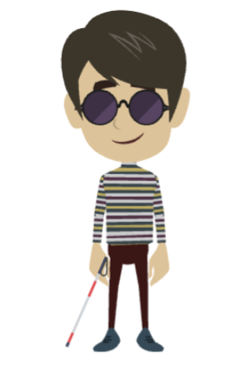

<!DOCTYPE html>
<html lang="en">
<head>
  <meta charset="UTF-8">
  <meta name="viewport" content="width=device-width, initial-scale=1.0">
  <title>Bionic Measure T1V1</title>
  <script src="dist/jspsych.js"></script>
  <script src="dist/plugin-preload.js"></script>
  <script src="dist/plugin-html-button-response.js"></script>
  <script src="dist/plugin-html-keyboard-response.js"></script>
  <script src="dist/plugin-audio-button-response.js"></script>
  <script src="dist/plugin-audio-keyboard-response.js"></script>
  <script src="dist/plugin-call-function.js"></script>
  <link href="dist/jspsych.css" rel="stylesheet" type="text/css" />
  <style>
    html,body{margin:0;padding:0;width:100%;height:100%;box-sizing:border-box}
    .jspsych-content-wrapper{min-height:100vh;width:100%;display:flex;align-items:center;justify-content:flex-start}
    .consent-photo{margin:0 3vw;flex-shrink:0;order:-1}.consent-photo img{max-height:35vh;max-width:25vw;width:auto}
    .consent-btn-box,.warmup-btn-box{display:flex;align-items:center;justify-content:center;border:2px solid #333;cursor:pointer;padding:1.5vw;box-sizing:border-box;background:#fff}.consent-btn-box:hover,.warmup-btn-box:hover{background:#f5f5f5}
    .consent-btn-box{width:20vmin;height:20vmin;min-width:100px;min-height:100px}.consent-btn-box img{max-width:100%;max-height:100%;object-fit:contain}
    #jspsych-content{display:flex;flex-direction:row;align-items:center;justify-content:flex-start;gap:4vw;padding-left:2vw}
    #jspsych-content .jspsych-btn-group-flex{gap:5vw;flex-shrink:0}
    .warmup-layout{position:absolute;top:0;left:0;width:100%;height:100%;pointer-events:none}.warmup-layout *{pointer-events:auto}
    .warmup-photo{position:absolute;top:2vh;left:2vw;width:12vw}.warmup-photo img{width:100%;height:auto}
    #jspsych-content:has(.warmup-layout){justify-content:center;align-items:center}#jspsych-content:has(.warmup-layout) .jspsych-btn-group-flex{gap:6vw}
    .warmup-btn-box{width:35vmin;height:35vmin;min-width:160px;min-height:160px}.warmup-btn-box img{max-width:100%;max-height:100%;object-fit:contain}
    .replay-wrap{position:fixed;bottom:2vh;right:2vw;z-index:9999;pointer-events:none}
    .replay-wrap .replay-btn,.replay-wrap audio{pointer-events:auto}
    .replay-wrap audio{position:absolute;width:0;height:0;opacity:0}
    .replay-btn{width:48px;height:48px;border-radius:50%;border:2px solid #333;background:#fff;cursor:pointer;font-size:20px;line-height:1;display:flex;align-items:center;justify-content:center}.replay-btn:hover:not(:disabled){background:#f5f5f5}.replay-btn:disabled{opacity:.5;cursor:not-allowed}
    .loom{animation:loom .6s ease-in-out infinite alternate}
    @keyframes loom{from{transform:scale(1);box-shadow:0 0 0 transparent}to{transform:scale(1.1);box-shadow:0 0 20px rgba(80,120,200,.6)}}
    .here-btn{background:none;border:none;text-decoration:underline;cursor:pointer;font-size:inherit;padding:0;font-family:inherit;color:inherit;margin:0}
    .here-btn:hover{opacity:.8}
    .disDesc-visuals{display:flex;flex-wrap:wrap;align-items:center;justify-content:center;gap:4vw;padding:2vh 2vw}
    .disDesc-visuals img{max-height:35vh;max-width:25vw;object-fit:contain}
    .disDesc-loom-wrap{display:inline-flex;align-items:center;justify-content:center}
    .warmth-scenario-layout{display:flex;flex-direction:column;min-height:100vh;align-items:center}
    .warmth-scenario-image{order:-1;flex-shrink:0;margin-top:6vh;margin-bottom:8vh}
    .warmth-scenario-image img{max-height:40vh;max-width:80vw;object-fit:contain}
    #jspsych-content:has(.warmth-scenario-layout){flex-direction:column}
    #jspsych-content:has(.warmth-scenario-layout) .jspsych-audio-button-response-btngroup,#jspsych-content:has(.warmth-direct-layout) .jspsych-audio-button-response-btngroup{margin-top:auto;display:flex!important;width:100%;gap:1vw;justify-content:center;padding:1vh 1vw;flex-wrap:wrap;align-items:stretch}
#jspsych-content:has(.warmth-direct-layout){flex-direction:column}
    .warmth-opt-btn{flex:1;min-width:0;min-height:12vh;padding:1vh 1vw;max-width:18vw;display:flex;align-items:center;justify-content:center;overflow:hidden}.warmth-opt-btn img{max-width:100%;max-height:100%;object-fit:contain}
    .warmth-direct-layout{display:flex;flex-direction:column;min-height:100vh;align-items:center}
.warmth-direct-opt-btn{min-width:4em!important;flex:1 1 auto;font-size:1.1em;font-weight:500;overflow:visible;white-space:nowrap;min-height:12vh;padding:1vh 1vw;display:flex!important;align-items:center;justify-content:center;cursor:pointer;border:2px solid #333;background:#fff;visibility:visible!important;opacity:1!important;color:#000}
#jspsych-content:has(.warmth-direct-layout) .jspsych-audio-button-response-btngroup{display:flex!important;visibility:visible!important}
    .competence-layout{display:flex;flex-direction:column;min-height:100vh;align-items:center}
    .competence-scenario-image{flex-shrink:0;margin:4vh 0 2vh}
    .competence-scenario-image img{max-height:min(35vh,320px);max-width:min(75vw,600px);object-fit:contain}
    #jspsych-content:has(.competence-layout){flex-direction:column}
    #jspsych-content:has(.competence-layout) .jspsych-audio-button-response-btngroup{margin-top:auto;flex-shrink:0;display:flex!important;width:100%;gap:0.8vw;justify-content:center;padding:1vh 1vw;flex-wrap:wrap;align-items:stretch}
    .competence-opt-btn{flex:1;min-width:0;min-height:95px;max-height:145px;max-width:180px;padding:0.5vh 0.5vw;display:flex;align-items:center;justify-content:center;overflow:hidden}
    .competence-opt-btn img{max-width:100%;max-height:100%;object-fit:contain}
    .epistemic-layout{display:flex;flex-direction:column;min-height:100vh;align-items:center}
    .epistemic-scenario-image{flex-shrink:0;margin:4vh 0 2vh}
    .epistemic-scenario-image img{max-height:min(26vh,240px);max-width:min(55vw,420px);object-fit:contain}
    #jspsych-content:has(.epistemic-layout){flex-direction:column}
    #jspsych-content:has(.epistemic-layout) .jspsych-audio-button-response-btngroup{margin-top:auto;flex-shrink:0;display:flex!important;width:100%;gap:0.8vw;justify-content:center;padding:1vh 1vw;flex-wrap:wrap;align-items:stretch}
    .epistemic-opt-btn{flex:1;min-width:0;min-height:140px;max-height:220px;max-width:280px;padding:0.5vh 0.5vw;display:flex;align-items:center;justify-content:center;overflow:hidden}
    .epistemic-opt-btn img{max-width:100%;max-height:100%;object-fit:contain}
    .pd-layout{display:flex;flex-direction:column;min-height:100vh;align-items:center}
    .pd-image-wrap{position:relative;display:inline-block;margin:4vh 0;max-width:min(95vw,1000px)}
    .pd-image-wrap img{display:block;width:auto;height:auto;max-width:min(95vw,1000px);max-height:min(70vh,700px);object-fit:contain}
    .pd-hotspot-layer{position:absolute;inset:0;width:100%;height:100%}
    .pd-hotspot-layer #jspsych-audio-button-response-btngroup{position:absolute!important;inset:0;display:block!important;margin:0!important;padding:0}
    .pd-hotspot[disabled]{opacity:.6!important;border:2px dashed #666!important;cursor:not-allowed!important}
    .pd-hotspot:not([disabled]){opacity:1!important;border:2px solid #00cc00!important;background:rgba(0,200,0,.45)!important;box-shadow:0 0 14px rgba(0,255,0,.5)!important;cursor:pointer!important;transition:border .2s,box-shadow .2s,background .2s}
  </style>
</head>
<body>
  <div id="jspsych-target"></div>
  <script>
    var jsPsych=initJsPsych({display_element:'jspsych-target'});
    function block(n,t){return{timeline:t,data:{block:n}};}
    function replayBtn(src){return'<span class="replay-wrap"><audio src="'+src+'"></audio><button class="replay-btn" type="button" disabled onclick="this.previousElementSibling.play()">↻</button></span>';}
    function runLoomSchedule(sched,delayStart){var d=typeof delayStart==='number'?delayStart:0;var t0=performance.now()/1e3;var iv=setInterval(function(){var t=Math.max(0,(performance.now()/1e3-t0)-d);sched.forEach(function(s){var el=document.querySelector(s.sel);if(el){if(t>=s.start&&t<=s.end)el.classList.add('loom');else el.classList.remove('loom');}});var maxEnd=sched.reduce(function(m,s){return Math.max(m,s.end);},0);if(t>maxEnd+2)clearInterval(iv);},50);}
    function setAudioDur(key,player){var d;if(player.webAudioBuffer)d=player.webAudioBuffer.duration;else if(player.audio)d=player.audio.duration;else d=40;window[key]=(typeof d==='number'&&d>0&&isFinite(d))?d:40;}
    function safeAudioStop(ap){try{if(ap&&typeof ap.stop==='function')ap.stop();else if(ap&&ap.audio&&ap.audio.pause){ap.audio.pause();ap.audio.currentTime=0;}}catch(e){}}
    function whenAudioEnds(pl,cb){if(pl&&pl.audio&&typeof pl.audio.addEventListener==='function')pl.audio.addEventListener('ended',cb,{once:true});else if(pl&&typeof pl.addEventListener==='function')pl.addEventListener('ended',cb);}

    // ---- PRELOAD & PAGE1 ----
    var preload={type:jsPsychPreload,images:['pinarPhoto.jpg','thumbsUp.png','thumbsDown.png','bye.png','orangeHouse.png','blueHouse.png','teacher.png','wheel1.png','noDiss1.png','blind1.png','ws1Wheel.png','ws1Blind.png','ws1NoDiss.png','ws1Wheel_girl.png','ws1Wheel_boy.png','ws1Blind_girl.png','ws1Blind_boy.png','ws1NoDiss_girl.png','ws1NoDiss_boy.png','ws2Wheel_girl.png','ws2Wheel_boy.png','ws2Blind_girl.png','ws2Blind_boy.png','ws2NoDiss_girl.png','ws2NoDiss_boy.png','ws3Wheel_girl.png','ws3Wheel_boy.png','ws3Blind_girl.png','ws3Blind_boy.png','ws3NoDiss_girl.png','ws3NoDiss_boy.png','wsOpt0.png','wsOpt1.png','wsOpt2.png','wsOpt3.png','wsOpt4.png','ws2Opt0.png','ws2Opt1.png','ws2Opt2.png','ws2Opt3.png','ws2Opt4.png','ws3Opt0.png','ws3Opt1.png','ws3Opt2.png','ws3Opt3.png','ws3Opt4.png','wd1Wheel.png','wd1Blind.png','wd1NoDiss.png','wd1Wheel_girl.png','wd1Wheel_boy.png','wd1Blind_girl.png','wd1Blind_boy.png','wd1NoDiss_girl.png','wd1NoDiss_boy.png','wd2Wheel_girl.png','wd2Wheel_boy.png','wd2Blind_girl.png','wd2Blind_boy.png','wd2NoDiss_girl.png','wd2NoDiss_boy.png','wd3Wheel_girl.png','wd3Wheel_boy.png','wd3Blind_girl.png','wd3Blind_boy.png','wd3NoDiss_girl.png','wd3NoDiss_boy.png','wd2Wheel.png','wd2Blind.png','wd2NoDiss.png','wd3Wheel.png','wd3Blind.png','wd3NoDiss.png','rNN.png','kNN.png','kN.png','rN.png','comp1Wheel.png','comp1Blind.png','comp1NoDiss.png','comp1Wheel_girl.png','comp1Wheel_boy.png','comp1Blind_girl.png','comp1Blind_boy.png','comp1NoDiss_girl.png','comp1NoDiss_boy.png','comp2Wheel_girl.png','comp2Wheel_boy.png','comp2Blind_girl.png','comp2Blind_boy.png','comp2NoDiss_girl.png','comp2NoDiss_boy.png','comp3Wheel_girl.png','comp3Wheel_boy.png','comp3Blind_girl.png','comp3Blind_boy.png','comp3NoDiss_girl.png','comp3NoDiss_boy.png','comp2Wheel.png','comp2Blind.png','comp2NoDiss.png','comp3Wheel.png','comp3Blind.png','comp3NoDiss.png','compOpt0.png','compOpt1.png','compOpt2.png','compOpt3.png','compOpt4.png','anim1.png','anim2.png','version1_anim1_opt1_girl.png','version1_anim1_opt1_boy.png','version1_anim1_opt2_girl.png','version1_anim1_opt2_boy.png','version2_anim1_opt1_girl.png','version2_anim1_opt1_boy.png','version2_anim1_opt2_girl.png','version2_anim1_opt2_boy.png','version1_anim2_opt1_girl.png','version1_anim2_opt1_boy.png','version1_anim2_opt2_girl.png','version1_anim2_opt2_boy.png','version2_anim2_opt1_girl.png','version2_anim2_opt1_boy.png','version2_anim2_opt2_girl.png','version2_anim2_opt2_boy.png','pDist_blind_v1_girl.png','pDist_blind_v1_boy.png','pDist_blind_v2_girl.png','pDist_blind_v2_boy.png','pDist_wheel_v1_girl.png','pDist_wheel_v1_boy.png','pDist_wheel_v2_girl.png','pDist_wheel_v2_boy.png'],audio:['consent.mp3','noConsent.mp3','warmUp.mp3','warmUp2.mp3','warmUp3.mp3','great.mp3','disDesc.mp3','warmth1.mp3','warmth1Copy.mp3','warmth2.mp3','warmth2Copy.mp3','warmth2CopyCopy.mp3','comp1.mp3','comp1Copy.mp3','comp1CopyCopy.mp3','first15.mp3','second15.mp3','epTrust1.mp3','epTrust2.mp3','pDistance.mp3'],message:'',show_progress_bar:false,continue_after_error:true};
    var screen_page1=block('page1',[{type:jsPsychHtmlKeyboardResponse,stimulus:'<p style="font-size:1.5em;text-align:center">To start, click Enter.</p>',choices:['Enter'],data:{block:'page1'}}]);
    var getFirst15Dur={type:jsPsychCallFunction,async:true,func:function(done){jsPsych.pluginAPI.getAudioPlayer('first15.mp3').then(function(p){setAudioDur('_first15Dur',p);done();}).catch(function(){window._first15Dur=15;done();});}};
    var getSecond15Dur={type:jsPsychCallFunction,async:true,func:function(done){jsPsych.pluginAPI.getAudioPlayer('second15.mp3').then(function(p){setAudioDur('_second15Dur',p);done();}).catch(function(){window._second15Dur=15;done();});}};

    // ---- EPISTEMIC TRUST BLOCK (2 questions: anim1 then anim2, or anim2 then anim1; opt1 left, opt2 right; same first15/second15 rules as warmth/comp) ----
    var epistemic_options=['opt1','opt2'];
    var epistemic_anim1_loomSched=[{start:0.843,end:1.686,sel:'#epistemic-middle-wrap'},{start:7.114,end:8.221,sel:'#jspsych-content [data-choice="0"]'},{start:11.54,end:12.444,sel:'#jspsych-content [data-choice="1"]'}];
    var epistemic_anim2_loomSched=[{start:7.201,end:8.157,sel:'#jspsych-content [data-choice="0"]'},{start:11.484,end:12.395,sel:'#jspsych-content [data-choice="1"]'}];
    var epistemic_init={type:jsPsychCallFunction,func:function(){window._epistemicAnimOrder=jsPsych.randomization.shuffle(['anim1','anim2']);}};
    function assignEpistemicParams(idx){var anim=window._epistemicAnimOrder[idx];var animNum=anim.replace('anim','');window._etAnim=anim;window._etEtAudio=anim==='anim1'?'epTrust1.mp3':'epTrust2.mp3';window._etEtDurKey=anim==='anim1'?'_epTrust1Dur':'_epTrust2Dur';window._etQVersion=jsPsych.randomization.sampleWithoutReplacement([1,2],1)[0];window._etQGender=jsPsych.randomization.sampleWithoutReplacement(['girl','boy'],1)[0];window._etLeftAsset='version'+window._etQVersion+'_anim'+animNum+'_opt1_'+window._etQGender;window._etRightAsset='version'+window._etQVersion+'_anim'+animNum+'_opt2_'+window._etQGender;window._etMiddleAsset=anim;window._etOrder=(window._epistemicAnimOrder||[]).join('->');}
    var epistemic_assign_1={type:jsPsychCallFunction,func:function(){assignEpistemicParams(0);}};
    var epistemic_assign_2={type:jsPsychCallFunction,func:function(){assignEpistemicParams(1);}};
    function epistemicEtLayout(){var mid=window._etMiddleAsset||'anim1';var p=document.getElementById('jspsych-audio-button-response-btngroup');if(p){var wrap=document.createElement('div');wrap.className='epistemic-layout';var imgDiv=document.createElement('div');imgDiv.className='epistemic-scenario-image';var midWrap=document.createElement('span');midWrap.id='epistemic-middle-wrap';midWrap.innerHTML='';imgDiv.appendChild(midWrap);wrap.appendChild(imgDiv);p.parentNode.insertBefore(wrap,p);wrap.appendChild(p);}}
    function epistemicFinishTrial(phase){var anim=window._etAnim;return{block:'epistemicTrust',anim:anim,phase:phase,response:null,response_value:null,q_version:window._etQVersion,gender_condition:window._etQGender,left_asset:window._etLeftAsset,right_asset:window._etRightAsset,order:window._etOrder};}
    var getEpTrust1Dur={type:jsPsychCallFunction,async:true,func:function(done){jsPsych.pluginAPI.getAudioPlayer('epTrust1.mp3').then(function(p){setAudioDur('_epTrust1Dur',p);done();}).catch(function(){window._epTrust1Dur=30;done();});}};
    var getEpTrust2Dur={type:jsPsychCallFunction,async:true,func:function(done){jsPsych.pluginAPI.getAudioPlayer('epTrust2.mp3').then(function(p){setAudioDur('_epTrust2Dur',p);done();}).catch(function(){window._epTrust2Dur=30;done();});}};
    var et_phase1={type:jsPsychAudioButtonResponse,stimulus:function(){return window._etEtAudio||'epTrust1.mp3';},prompt:null,choices:epistemic_options,button_html:function(c,i){var src=(i===0?(window._etLeftAsset||''):(window._etRightAsset||''))+'.png';return'<button class="jspsych-btn epistemic-opt-btn" data-choice="'+i+'"></button>';},button_layout:'flex',response_allowed_while_playing:false,data:{block:'epistemicTrust',phase:1},on_load:function(){var audioFile=window._etEtAudio||'epTrust1.mp3';var ap=jsPsych.pluginAPI.audio_buffers&&jsPsych.pluginAPI.audio_buffers[audioFile];safeAudioStop(ap);epistemicEtLayout();var loomSched=window._etAnim==='anim1'?epistemic_anim1_loomSched:epistemic_anim2_loomSched;runLoomSchedule(loomSched);var introReplay=document.createElement('audio');introReplay.src=audioFile;var r=document.createElement('span');r.className='replay-wrap';r.appendChild(introReplay);var replayBtn=document.createElement('button');replayBtn.className='replay-btn';replayBtn.textContent='↻';replayBtn.type='button';replayBtn.disabled=true;r.appendChild(replayBtn);document.getElementById('jspsych-content').appendChild(r);var btns=document.querySelectorAll('#jspsych-audio-button-response-btngroup button');function enableBtns(){btns.forEach(function(b){b.removeAttribute('disabled');});replayBtn.disabled=false;}function start15s(){jsPsych.pluginAPI.setTimeout(function(){jsPsych.finishTrial(epistemicFinishTrial(1));},15000);}jsPsych.pluginAPI.getAudioPlayer(audioFile).then(function(pl){if(pl){function onEnd(){enableBtns();start15s();}whenAudioEnds(pl,onEnd);}}).catch(function(){});replayBtn.onclick=function(){jsPsych.pluginAPI.clearAllTimeouts();btns.forEach(function(b){b.setAttribute('disabled','disabled');});replayBtn.disabled=true;introReplay.play();introReplay.onended=function(){enableBtns();start15s();};};document.getElementById('jspsych-audio-button-response-btngroup').addEventListener('click',function(){jsPsych.pluginAPI.clearAllTimeouts();},true);var iv=setInterval(function(){if(btns[0]&&!btns[0].disabled){clearInterval(iv);replayBtn.disabled=false;}},100);},on_finish:function(d){d.anim=window._etAnim;d.q_version=window._etQVersion;d.gender_condition=window._etQGender;d.left_asset=window._etLeftAsset;d.right_asset=window._etRightAsset;d.order=window._etOrder;d.response_value=d.response!=null?epistemic_options[d.response]:null;}};
    var et_phase2={type:jsPsychAudioButtonResponse,stimulus:'first15.mp3',prompt:null,choices:epistemic_options,button_html:function(c,i){var src=(i===0?(window._etLeftAsset||''):(window._etRightAsset||''))+'.png';return'<button class="jspsych-btn epistemic-opt-btn" data-choice="'+i+'"></button>';},button_layout:'flex',response_allowed_while_playing:true,data:{block:'epistemicTrust',phase:2},on_load:function(){epistemicEtLayout();var audioFile=window._etEtAudio||'epTrust1.mp3';var loomSched=window._etAnim==='anim1'?epistemic_anim1_loomSched:epistemic_anim2_loomSched;runLoomSchedule(loomSched);var r=document.createElement('span');r.className='replay-wrap';r.innerHTML='<audio src="'+audioFile+'"></audio><button class="replay-btn" type="button">↻</button>';var introEl=r.querySelector('audio');var replayBtnEl=r.querySelector('.replay-btn');function start15s(){jsPsych.pluginAPI.setTimeout(function(){jsPsych.finishTrial(epistemicFinishTrial(2));},15000);}replayBtnEl.onclick=function(){jsPsych.pluginAPI.getAudioPlayer('first15.mp3').then(function(pl){safeAudioStop(pl);}).catch(function(){});jsPsych.pluginAPI.clearAllTimeouts();introEl.onended=function(){jsPsych.pluginAPI.getAudioPlayer('first15.mp3').then(function(pl){if(pl){safeAudioStop(pl);pl.play();var h=function(){start15s();};whenAudioEnds(pl,h);}}).catch(function(){});};introEl.play();};jsPsych.pluginAPI.getAudioPlayer('first15.mp3').then(function(pl){if(pl){function onFirst15End(){start15s();}whenAudioEnds(pl,onFirst15End);}}).catch(function(){});var p=document.getElementById('jspsych-audio-button-response-btngroup');if(p)p.addEventListener('click',function(){jsPsych.pluginAPI.clearAllTimeouts();},true);document.getElementById('jspsych-content').appendChild(r);},on_finish:function(d){d.anim=window._etAnim;d.q_version=window._etQVersion;d.gender_condition=window._etQGender;d.left_asset=window._etLeftAsset;d.right_asset=window._etRightAsset;d.order=window._etOrder;d.response_value=d.response!=null?epistemic_options[d.response]:null;}};
    var et_phase3={type:jsPsychAudioButtonResponse,stimulus:'second15.mp3',prompt:null,choices:epistemic_options,button_html:function(c,i){var src=(i===0?(window._etLeftAsset||''):(window._etRightAsset||''))+'.png';return'<button class="jspsych-btn epistemic-opt-btn" data-choice="'+i+'"></button>';},button_layout:'flex',response_allowed_while_playing:true,trial_ends_after_audio:true,data:{block:'epistemicTrust',phase:3},on_load:function(){epistemicEtLayout();var audioFile=window._etEtAudio||'epTrust1.mp3';var loomSched=window._etAnim==='anim1'?epistemic_anim1_loomSched:epistemic_anim2_loomSched;runLoomSchedule(loomSched);var r=document.createElement('span');r.className='replay-wrap';r.innerHTML='<audio src="'+audioFile+'"></audio><button class="replay-btn" type="button">↻</button>';var introEl=r.querySelector('audio');var replayBtnEl=r.querySelector('.replay-btn');replayBtnEl.onclick=function(){jsPsych.pluginAPI.getAudioPlayer('first15.mp3').then(function(pl){safeAudioStop(pl);}).catch(function(){});jsPsych.pluginAPI.clearAllTimeouts();introEl.onended=function(){jsPsych.pluginAPI.getAudioPlayer('first15.mp3').then(function(pl){if(pl){safeAudioStop(pl);pl.play();whenAudioEnds(pl,function(){jsPsych.pluginAPI.getAudioPlayer('second15.mp3').then(function(p2){if(p2){safeAudioStop(p2);p2.play();}}).catch(function(){});});}}).catch(function(){});};introEl.play();};document.getElementById('jspsych-content').appendChild(r);},on_finish:function(d){d.anim=window._etAnim;d.q_version=window._etQVersion;d.gender_condition=window._etQGender;d.left_asset=window._etLeftAsset;d.right_asset=window._etRightAsset;d.order=window._etOrder;d.response_value=d.response!=null?epistemic_options[d.response]:null;}};
    var et_phase2_node={timeline:[et_phase2],conditional_function:function(){var d=jsPsych.data.getLastTrialData().values()[0];return d&&d.block==='epistemicTrust'&&d.phase===1&&(d.response==null||d.response===undefined);}};
    var et_phase3_node={timeline:[et_phase3],conditional_function:function(){var d=jsPsych.data.getLastTrialData().values()[0];return d&&d.block==='epistemicTrust'&&d.phase===2&&(d.response==null||d.response===undefined);}};
    var epistemic_trial_1={timeline:[epistemic_assign_1,et_phase1,et_phase2_node,et_phase3_node]};
    var epistemic_trial_2={timeline:[epistemic_assign_2,et_phase1,et_phase2_node,et_phase3_node]};
    var epistemicTrust_block=block('epistemicTrust',[epistemic_init,getEpTrust1Dur,getEpTrust2Dur,getFirst15Dur,getSecond15Dur,epistemic_trial_1,epistemic_trial_2]);

    // ---- PHYSICAL DISTANCE BLOCK (2 questions: blind and wheel; order counterbalanced 50/50; 13 hotspots; same first15/second15 as warmth) ----
    var pd_hotspots=[{
    "id": 1,
    "x": 0.4,
    "y": 78.01,
    "w": 8,
    "h": 14.1
  },
  {
    "id": 2,
    "x": 5.3,
    "y": 60.24,
    "w": 8,
    "h": 14.1
  },
  {
    "id": 3,
    "x": 12.9,
    "y": 45.83,
    "w": 8,
    "h": 14.1
  },
  {
    "id": 4,
    "x": 19.3,
    "y": 78.42,
    "w": 8,
    "h": 14.1
  },
  {
    "id": 5,
    "x": 25.3,
    "y": 61.3,
    "w": 8,
    "h": 14.1
  },
  {
    "id": 6,
    "x": 33.4,
    "y": 46.65,
    "w": 8,
    "h": 14.1
  },
  {
    "id": 7,
    "x": 46,
    "y": 60.77,
    "w": 8,
    "h": 14.1
  },
  {
    "id": 8,
    "x": 57.2,
    "y": 78.6,
    "w": 8,
    "h": 14.1
  },
  {
    "id": 9,
    "x": 63.4,
    "y": 61.3,
    "w": 8,
    "h": 14.1
  },
  {
    "id": 10,
    "x": 70,
    "y": 46.47,
    "w": 8,
    "h": 14.1
  },
  {
    "id": 11,
    "x": 77.8,
    "y": 78.54,
    "w": 8,
    "h": 14.1
  },
  {
    "id": 12,
    "x": 84.6,
    "y": 62.18,
    "w": 8,
    "h": 14.1
  },
  {
    "id": 13,
    "x": 90.4,
    "y": 46.83,
    "w": 8,
    "h": 14.1
  }];
    var pd_choices=[1,2,3,4,5,6,7,8,9,10,11,12,13];
    var pd_W_PCT=8;var pd_H_PCT=14.1;
    function pdHotspotHtml(h,i){return'<button class="jspsych-btn pd-hotspot" data-choice="'+i+'" style="position:absolute;left:'+h.x+'%;top:'+h.y+'%;width:'+pd_W_PCT+'%;height:'+pd_H_PCT+'%;display:none;opacity:0;visibility:hidden;pointer-events:none;border:2px solid green;background:rgba(0,128,0,0.25);padding:0;margin:0;cursor:pointer;box-sizing:border-box"></button>';}
    var pd_init={type:jsPsychCallFunction,func:function(){window._pdOrder=jsPsych.randomization.shuffle(['blind','wheel']);}};
    var getPDistanceDur={type:jsPsychCallFunction,async:true,func:function(done){jsPsych.pluginAPI.getAudioPlayer('pDistance.mp3').then(function(p){setAudioDur('_pDistanceDur',p);done();}).catch(function(){window._pDistanceDur=30;done();});}};
    function assignPDParams(idx){var typ=window._pdOrder[idx];window._pdType=typ;window._pdVersion=jsPsych.randomization.sampleWithoutReplacement(['v1','v2'],1)[0];window._pdGender=jsPsych.randomization.sampleWithoutReplacement(['boy','girl'],1)[0];window._pdImageName='pDist_'+typ+'_'+window._pdVersion+'_'+window._pdGender+'.png';window._pdOrderStr=(window._pdOrder||[]).join(',');}
    function pdOnChoiceMade(){var wrap=document.querySelector('.pd-layout');if(wrap)wrap.style.display='none';var rw=document.querySelector('#jspsych-content .replay-wrap');if(rw)rw.style.display='none';jsPsych.pluginAPI.getAudioPlayer('great.mp3').then(function(pl){if(pl&&typeof pl.play==='function')pl.play();else if(pl&&pl.audio&&pl.audio.play)pl.audio.play();}).catch(function(){});}
    function pdLayout(){var img=window._pdImageName||'pDist_blind_v1_girl.png';var p=document.getElementById('jspsych-audio-button-response-btngroup');if(p){var wrap=document.createElement('div');wrap.className='pd-layout';var imgDiv=document.createElement('div');imgDiv.className='pd-image-wrap';imgDiv.innerHTML='';wrap.appendChild(imgDiv);p.parentNode.insertBefore(wrap,p);var hotspotLayer=document.createElement('div');hotspotLayer.className='pd-hotspot-layer';hotspotLayer.style.display='none';hotspotLayer.appendChild(p);imgDiv.appendChild(hotspotLayer);window._pdHotspotLayer=hotspotLayer;hotspotLayer.addEventListener('click',function(e){if(e.target.closest&&e.target.closest('.pd-hotspot')&&!e.target.closest('.pd-hotspot').hasAttribute('disabled'))pdOnChoiceMade();},true);}}
    function pdShowHotspotsAfterAudioStarts(delayMs,audioFile,choosableFromReveal){var layer=window._pdHotspotLayer;if(!layer)return;layer.style.display='none';var btns=layer.querySelectorAll('.pd-hotspot');btns.forEach(function(b){b.style.display='none';b.style.opacity='0';b.style.visibility='hidden';b.style.pointerEvents='none';});function reveal(){layer.style.display='block';btns.forEach(function(b){b.style.display='block';b.style.opacity='1';b.style.visibility='visible';b.style.pointerEvents='auto';if(choosableFromReveal)b.removeAttribute('disabled');});}function scheduleReveal(){jsPsych.pluginAPI.setTimeout(reveal,delayMs);}jsPsych.pluginAPI.getAudioPlayer(audioFile).then(function(player){var el=player&&player.audio;var isHtmlAudio=el&&(el instanceof HTMLMediaElement||(el.tagName&&el.tagName.toLowerCase()==='audio'));if(isHtmlAudio&&el.addEventListener){var onPlaying=function(){el.removeEventListener('playing',onPlaying);scheduleReveal();};el.addEventListener('playing',onPlaying);if(el.currentTime>0&&!el.paused){el.removeEventListener('playing',onPlaying);scheduleReveal();}}else{scheduleReveal();}}).catch(function(){scheduleReveal();});}
    function pdFinishTrial(phase){return{block:'physicalDistance',question_type:window._pdType,pd_version:window._pdVersion,pd_gender:window._pdGender,image_name:window._pdImageName,selected_hotspot_id:null,order:window._pdOrderStr,phase:phase,response:null};}
    var pd_assign_1={type:jsPsychCallFunction,func:function(){assignPDParams(0);}};
    var pd_assign_2={type:jsPsychCallFunction,func:function(){assignPDParams(1);}};
    var pd_phase1={type:jsPsychAudioButtonResponse,stimulus:'pDistance.mp3',prompt:null,choices:pd_choices,button_html:function(c,i){return pdHotspotHtml(pd_hotspots[i],i);},button_layout:'flex',response_allowed_while_playing:false,data:{block:'physicalDistance',phase:1},on_load:function(){var ap=jsPsych.pluginAPI.audio_buffers&&jsPsych.pluginAPI.audio_buffers['pDistance.mp3'];safeAudioStop(ap);pdLayout();pdShowHotspotsAfterAudioStarts(8000,'pDistance.mp3');var replay=document.createElement('span');replay.className='replay-wrap';replay.innerHTML='<audio src="pDistance.mp3"></audio><button class="replay-btn" type="button" disabled>↻</button>';document.getElementById('jspsych-content').appendChild(replay);var replayBtn=replay.querySelector('.replay-btn');var btns=document.querySelectorAll('#jspsych-audio-button-response-btngroup button');function enableBtns(){btns.forEach(function(b){b.removeAttribute('disabled');});replayBtn.disabled=false;}function start15s(){jsPsych.pluginAPI.setTimeout(function(){jsPsych.finishTrial(pdFinishTrial(1));},15000);}jsPsych.pluginAPI.getAudioPlayer('pDistance.mp3').then(function(pl){if(pl){function onEnd(){enableBtns();start15s();}whenAudioEnds(pl,onEnd);}}).catch(function(){});replayBtn.onclick=function(){jsPsych.pluginAPI.clearAllTimeouts();btns.forEach(function(b){b.setAttribute('disabled','disabled');});replayBtn.disabled=true;replay.querySelector('audio').play();replay.querySelector('audio').onended=function(){enableBtns();start15s();};};var ly=window._pdHotspotLayer;if(ly)ly.addEventListener('click',function(){jsPsych.pluginAPI.clearAllTimeouts();},true);var iv=setInterval(function(){if(btns[0]&&!btns[0].disabled){clearInterval(iv);replayBtn.disabled=false;}},100);},on_finish:function(d){d.question_type=window._pdType;d.pd_version=window._pdVersion;d.pd_gender=window._pdGender;d.image_name=window._pdImageName;d.selected_hotspot_id=d.response!=null?d.response+1:null;d.order=window._pdOrderStr;}};
    var pd_phase2={type:jsPsychAudioButtonResponse,stimulus:'first15.mp3',prompt:null,choices:pd_choices,button_html:function(c,i){return pdHotspotHtml(pd_hotspots[i],i);},button_layout:'flex',response_allowed_while_playing:true,data:{block:'physicalDistance',phase:2},on_load:function(){pdLayout();pdShowHotspotsAfterAudioStarts(8000,'first15.mp3',true);var r=document.createElement('span');r.className='replay-wrap';r.innerHTML='<audio src="pDistance.mp3"></audio><button class="replay-btn" type="button">↻</button>';var intro=r.querySelector('audio');var rBtn=r.querySelector('.replay-btn');function start15s(){jsPsych.pluginAPI.setTimeout(function(){jsPsych.finishTrial(pdFinishTrial(2));},15000);}rBtn.onclick=function(){jsPsych.pluginAPI.getAudioPlayer('first15.mp3').then(function(pl){safeAudioStop(pl);}).catch(function(){});jsPsych.pluginAPI.clearAllTimeouts();intro.onended=function(){jsPsych.pluginAPI.getAudioPlayer('first15.mp3').then(function(pl){if(pl){safeAudioStop(pl);pl.play();var h=function(){start15s();};whenAudioEnds(pl,h);}}).catch(function(){});};intro.play();};jsPsych.pluginAPI.getAudioPlayer('first15.mp3').then(function(pl){if(pl){function onEnd(){start15s();}whenAudioEnds(pl,onEnd);}}).catch(function(){});var p=document.getElementById('jspsych-audio-button-response-btngroup');if(p)p.addEventListener('click',function(){jsPsych.pluginAPI.clearAllTimeouts();},true);document.getElementById('jspsych-content').appendChild(r);},on_finish:function(d){d.question_type=window._pdType;d.pd_version=window._pdVersion;d.pd_gender=window._pdGender;d.image_name=window._pdImageName;d.selected_hotspot_id=d.response!=null?d.response+1:null;d.order=window._pdOrderStr;}};
    var pd_phase3={type:jsPsychAudioButtonResponse,stimulus:'second15.mp3',prompt:null,choices:pd_choices,button_html:function(c,i){return pdHotspotHtml(pd_hotspots[i],i);},button_layout:'flex',response_allowed_while_playing:true,trial_ends_after_audio:true,data:{block:'physicalDistance',phase:3},on_load:function(){pdLayout();pdShowHotspotsAfterAudioStarts(8000,'second15.mp3',true);var r=document.createElement('span');r.className='replay-wrap';r.innerHTML='<audio src="pDistance.mp3"></audio><button class="replay-btn" type="button">↻</button>';var intro=r.querySelector('audio');var rBtn=r.querySelector('.replay-btn');rBtn.onclick=function(){jsPsych.pluginAPI.getAudioPlayer('first15.mp3').then(function(pl){safeAudioStop(pl);}).catch(function(){});jsPsych.pluginAPI.clearAllTimeouts();intro.onended=function(){jsPsych.pluginAPI.getAudioPlayer('first15.mp3').then(function(pl){if(pl){safeAudioStop(pl);pl.play();whenAudioEnds(pl,function(){jsPsych.pluginAPI.getAudioPlayer('second15.mp3').then(function(p2){if(p2){safeAudioStop(p2);p2.play();}}).catch(function(){});});}}).catch(function(){});};intro.play();};document.getElementById('jspsych-content').appendChild(r);},on_finish:function(d){d.question_type=window._pdType;d.pd_version=window._pdVersion;d.pd_gender=window._pdGender;d.image_name=window._pdImageName;d.selected_hotspot_id=d.response!=null?d.response+1:null;d.order=window._pdOrderStr;}};
    var pd_phase2_node={timeline:[pd_phase2],conditional_function:function(){var d=jsPsych.data.getLastTrialData().values()[0];return d&&d.block==='physicalDistance'&&d.phase===1&&(d.response==null||d.response===undefined);}};
    var pd_phase3_node={timeline:[pd_phase3],conditional_function:function(){var d=jsPsych.data.getLastTrialData().values()[0];return d&&d.block==='physicalDistance'&&d.phase===2&&(d.response==null||d.response===undefined);}};
    var pd_trial_1={timeline:[pd_assign_1,pd_phase1,pd_phase2_node,pd_phase3_node]};
    var pd_trial_2={timeline:[pd_assign_2,pd_phase1,pd_phase2_node,pd_phase3_node]};
    var pd_inter_question_delay={type:jsPsychHtmlKeyboardResponse,stimulus:'',choices:'NO_KEYS',trial_duration:2000,data:{block:'physicalDistance',inter_question_delay:true}};
    var physicalDistance_block=block('physicalDistance',[pd_init,getPDistanceDur,getFirst15Dur,getSecond15Dur,pd_trial_1,pd_inter_question_delay,pd_trial_2]);

    // ---- CONSENT BLOCK (only block with trial_duration - fallback timeout confined here) ----
    var screen_consent={type:jsPsychAudioButtonResponse,stimulus:'consent.mp3',prompt:'<div class="consent-photo"></div>'+replayBtn('consent.mp3'),choices:['down','up'],button_html:function(c,i){return'<button class="jspsych-btn consent-btn-box"></button>';},button_layout:'flex',response_allowed_while_playing:false,trial_duration:600000,data:{block:'consent'},on_load:function(){runLoomSchedule([{start:2.45,end:3.181,sel:'#jspsych-content [data-choice="0"]'},{start:3.553,end:4.702,sel:'#jspsych-content [data-choice="1"]'},{start:5.074,end:6.269,sel:'.replay-btn'}]);var iv=setInterval(function(){var b=document.querySelector('#jspsych-audio-button-response-btngroup button');if(b&&!b.disabled){clearInterval(iv);var r=document.querySelector('.replay-btn');if(r)r.disabled=false;}},100);},on_finish:function(d){d.response_value=d.response===1?'down':'up';}};
    var screen_bye_audio={type:jsPsychAudioKeyboardResponse,stimulus:'noConsent.mp3',prompt:'<div style="text-align:center"></div>',trial_ends_after_audio:true,data:{block:'bye_audio'}};
    var screen_bye_msg={type:jsPsychHtmlKeyboardResponse,stimulus:'<p style="font-size:1.5em;text-align:center">You can close this window now to end the session. Thank you!</p>',choices:['Enter'],data:{block:'bye_msg'}};
    var bye_if_down={timeline:[screen_bye_audio,screen_bye_msg],conditional_function:function(){var d=jsPsych.data.getLastTrialData().values()[0];return d.block==='consent'&&d.response===1;}};
    var consent_block=block('consent',[screen_consent,bye_if_down]);

    // ---- WARMUP SCREENS ----
    function makeWarmupTrial(audio){var loomSched=audio==='warmUp.mp3'?[{start:15.760,end:16.982,sel:'#jspsych-content [data-choice="0"]'},{start:17.111,end:18.333,sel:'#jspsych-content [data-choice="1"]'}]:audio==='warmUp2.mp3'?[{start:4.614,end:5.910,sel:'#jspsych-content [data-choice="0"]'},{start:6.156,end:7.387,sel:'#jspsych-content [data-choice="1"]'}]:[{start:21,end:23.7,sel:'#jspsych-content [data-choice="0"]'},{start:24,end:25,sel:'#jspsych-content [data-choice="1"]'}];var t={type:jsPsychAudioButtonResponse,stimulus:audio,prompt:'<div class="warmup-layout"><div class="warmup-photo"></div></div>'+replayBtn(audio),choices:['orange','blue'],button_html:function(c,i){return'<button class="jspsych-btn warmup-btn-box"></button>';},button_layout:'flex',response_allowed_while_playing:false,data:{block:audio.replace('.mp3','')},on_load:function(){runLoomSchedule(loomSched);var iv=setInterval(function(){var b=document.querySelector('#jspsych-audio-button-response-btngroup button');if(b&&!b.disabled){clearInterval(iv);var r=document.querySelector('.replay-btn');if(r)r.disabled=false;}},100);},on_finish:function(d){d.response_value=d.response===0?'orange':'blue';}};if(audio==='warmUp.mp3'){t.trial_duration=function(){return Math.ceil(((window._warmUpDur||40)+18)*1e3);};}if(audio==='warmUp2.mp3'){t.trial_duration=function(){return Math.ceil(((window._warmUp2Dur||40)+18)*1e3);};}return t;}
    var screen_warmup=makeWarmupTrial('warmUp.mp3');
    var screen_warmup2=makeWarmupTrial('warmUp2.mp3');
    var screen_warmup3={type:jsPsychAudioKeyboardResponse,stimulus:'warmUp3.mp3',prompt:'<div style="text-align:center"></div>',choices:'NO_KEYS',trial_ends_after_audio:true,response_allowed_while_playing:false,data:{block:'warmUp3'}};

    // ---- AUDIO DURATION HELPERS (used for trial timeouts) ----
    var getWarmUpDur={type:jsPsychCallFunction,async:true,func:function(done){jsPsych.pluginAPI.getAudioPlayer('warmUp.mp3').then(function(p){setAudioDur('_warmUpDur',p);done();}).catch(function(){window._warmUpDur=40;done();});}};
    var getWarmUp2Dur={type:jsPsychCallFunction,async:true,func:function(done){jsPsych.pluginAPI.getAudioPlayer('warmUp2.mp3').then(function(p){setAudioDur('_warmUp2Dur',p);done();}).catch(function(){window._warmUp2Dur=40;done();});}};
    var getWarmUp3Dur={type:jsPsychCallFunction,async:true,func:function(done){jsPsych.pluginAPI.getAudioPlayer('warmUp3.mp3').then(function(){done();}).catch(function(){done();});}};

    // ---- TEACHER SCREENS (shown when no response on warmUp3) ----
    var screen_teacher={type:jsPsychHtmlButtonResponse,stimulus:'<div class="teacher-scene-sentence" style="text-align:center"><p style="font-size:1.5em;margin:0">Dear teacher, please click <span id="teacher-here-spot"></span></p></div>',choices:['here'],button_html:function(c){return'<button class="jspsych-btn here-btn">here</button>';},data:{block:'teacher'},on_load:function(){var spot=document.getElementById('teacher-here-spot');var btn=document.querySelector('#jspsych-html-button-response-btngroup button');if(spot&&btn){spot.appendChild(btn);document.getElementById('jspsych-html-button-response-btngroup').style.display='none';}}};
    var screen_activity_question={type:jsPsychHtmlButtonResponse,stimulus:'<p style="font-size:1.2em;text-align:center;max-width:600px;margin:0 auto">If the activity seems to be working and the student would like to continue, please press continue. If not, please end the session by pressing end session.</p>',choices:['Continue','End session'],data:{block:'activity_check'},on_finish:function(d){d.response_value=d.response===0?'continue':'end';}};
    var screen_end_session={type:jsPsychHtmlButtonResponse,stimulus:'<p style="font-size:1.5em;text-align:center">Session ended, please close the window now. Thank you!</p>',choices:['OK'],data:{block:'end_session'},conditional_function:function(){var d=jsPsych.data.getLastTrialData().values()[0];return d.block==='activity_check'&&d.response===1;}};

    // ---- WARMTH BLOCK (warmth scenario: Q1→Q2→Q3 fixed order, counterbalanced: each sees Wheel/Blind/NoDiss once across Q1-Q3) ----
    var warmth_ws_images={1:'ws1Wheel.png',2:'ws1Blind.png',3:'ws1NoDiss.png'};
    var warmth_ws_options=['wsOpt0','wsOpt1','wsOpt2','wsOpt3','wsOpt4'];
    var warmth_ws2_images={1:'ws2Wheel.png',2:'ws2Blind.png',3:'ws2NoDiss.png'};
    var warmth_ws2_options=['ws2Opt0','ws2Opt1','ws2Opt2','ws2Opt3','ws2Opt4'];
    var warmth_ws3_images={1:'ws3Wheel.png',2:'ws3Blind.png',3:'ws3NoDiss.png'};
    var warmth_ws3_options=['ws3Opt0','ws3Opt1','ws3Opt2','ws3Opt3','ws3Opt4'];
    var warmth_ws_q1_loomSched=[{start:11.794,end:12.650,sel:'#jspsych-content [data-choice="0"]'},{start:12.963,end:13.553,sel:'#jspsych-content [data-choice="1"]'},{start:13.951,end:14.613,sel:'#jspsych-content [data-choice="2"]'},{start:14.914,end:15.456,sel:'#jspsych-content [data-choice="3"]'},{start:15.649,end:16.405,sel:'#jspsych-content [data-choice="4"]'}];
    var warmth_ws_q2_loomSched=[{start:11.794,end:12.650,sel:'#jspsych-content [data-choice="0"]'},{start:12.963,end:13.553,sel:'#jspsych-content [data-choice="1"]'},{start:13.951,end:14.613,sel:'#jspsych-content [data-choice="2"]'},{start:14.914,end:15.456,sel:'#jspsych-content [data-choice="3"]'},{start:15.649,end:16.405,sel:'#jspsych-content [data-choice="4"]'}];
    var warmth_ws_q3_loomSched=[{start:11.794,end:12.650,sel:'#jspsych-content [data-choice="0"]'},{start:12.963,end:13.553,sel:'#jspsych-content [data-choice="1"]'},{start:13.951,end:14.613,sel:'#jspsych-content [data-choice="2"]'},{start:14.914,end:15.456,sel:'#jspsych-content [data-choice="3"]'},{start:15.649,end:16.405,sel:'#jspsych-content [data-choice="4"]'}];
    var getWarmth1Dur={type:jsPsychCallFunction,async:true,func:function(done){jsPsych.pluginAPI.getAudioPlayer('warmth1.mp3').then(function(p){setAudioDur('_warmth1Dur',p);done();}).catch(function(){window._warmth1Dur=30;done();});}};
    function assignConditionGender(){if(!window._conditionGender){window._conditionGender=jsPsych.randomization.sampleWithoutReplacement(['girl','boy'],1)[0];}}
    var assignConditionGenderTrial={type:jsPsychCallFunction,func:assignConditionGender};
    var assignWarmthScenarioVersion={type:jsPsychCallFunction,func:function(){var vo=jsPsych.randomization.shuffle([1,2,3]);window._warmthVersionOrder=vo;window._warmthQ1Version=vo[0];window._warmthQ2Version=vo[1];window._warmthQ3Version=vo[2];}};
    function warmthWsMiddleSrc(baseMap,ver){var base=baseMap[ver]||'ws1Wheel.png';return base.replace('.png','')+'_'+(window._conditionGender||'girl')+'.png';}
    var warmth_q1_phase1={type:jsPsychAudioButtonResponse,stimulus:'warmth1.mp3',prompt:null,choices:warmth_ws_options,button_html:function(c,i){return'<button class="jspsych-btn warmth-opt-btn" data-choice="'+i+'"></button>';},button_layout:'flex',response_allowed_while_playing:false,data:{block:'warmth_scenario',question:'q1',phase:1},on_load:function(){var ap=jsPsych.pluginAPI.audio_buffers&&jsPsych.pluginAPI.audio_buffers['warmth1.mp3'];safeAudioStop(ap);var ver=window._warmthQ1Version||1;var p=document.getElementById('jspsych-audio-button-response-btngroup');if(p){var wrap=document.createElement('div');wrap.className='warmth-scenario-layout';var imgDiv=document.createElement('div');imgDiv.className='warmth-scenario-image';imgDiv.innerHTML='';wrap.appendChild(imgDiv);p.parentNode.insertBefore(wrap,p);wrap.appendChild(p);}var warmth1Replay=document.createElement('audio');warmth1Replay.src='warmth1.mp3';var r=document.createElement('span');r.className='replay-wrap';r.appendChild(warmth1Replay);var replayBtn=document.createElement('button');replayBtn.className='replay-btn';replayBtn.textContent='↻';replayBtn.type='button';replayBtn.disabled=true;r.appendChild(replayBtn);document.getElementById('jspsych-content').appendChild(r);runLoomSchedule(warmth_ws_q1_loomSched);var btns=document.querySelectorAll('#jspsych-audio-button-response-btngroup button');function enableBtns(){btns.forEach(function(b){b.removeAttribute('disabled');});replayBtn.disabled=false;}function start15sTimer(){jsPsych.pluginAPI.setTimeout(function(){jsPsych.finishTrial({block:'warmth_scenario',question:'q1',phase:1,response:null,response_value:null,version:ver,q_version:ver,version_order:(window._warmthVersionOrder||[]).join(',')});},15000);}jsPsych.pluginAPI.getAudioPlayer('warmth1.mp3').then(function(audioPlayer){function onWarmth1End(){enableBtns();start15sTimer();}whenAudioEnds(audioPlayer,onWarmth1End);}).catch(function(){});replayBtn.onclick=function(){jsPsych.pluginAPI.clearAllTimeouts();btns.forEach(function(b){b.setAttribute('disabled','disabled');});replayBtn.disabled=true;warmth1Replay.play();warmth1Replay.onended=function(){enableBtns();start15sTimer();};};if(p){p.addEventListener('click',function(){jsPsych.pluginAPI.clearAllTimeouts();},true);}var iv=setInterval(function(){if(btns[0]&&!btns[0].disabled){clearInterval(iv);replayBtn.disabled=false;}},100);},on_finish:function(d){d.conditionGender=window._conditionGender;d.version_order=(window._warmthVersionOrder||[]).join(',');d.q_version=window['_warmthQ'+d.question.charAt(1)+'Version'];d.version=d.q_version;d.response_value=d.response!=null?warmth_ws_options[d.response]:null;}};
    var warmth_q1_phase2={type:jsPsychAudioButtonResponse,stimulus:'first15.mp3',prompt:null,choices:warmth_ws_options,button_html:function(c,i){return'<button class="jspsych-btn warmth-opt-btn" data-choice="'+i+'"></button>';},button_layout:'flex',response_allowed_while_playing:true,data:{block:'warmth_scenario',question:'q1',phase:2},on_load:function(){var ver=window._warmthQ1Version||1;var p=document.getElementById('jspsych-audio-button-response-btngroup');if(p){var wrap=document.createElement('div');wrap.className='warmth-scenario-layout';var imgDiv=document.createElement('div');imgDiv.className='warmth-scenario-image';imgDiv.innerHTML='';wrap.appendChild(imgDiv);p.parentNode.insertBefore(wrap,p);wrap.appendChild(p);}var r=document.createElement('span');r.className='replay-wrap';r.innerHTML='<audio src="warmth1.mp3"></audio><button class="replay-btn" type="button">↻</button>';var warmth1El=r.querySelector('audio');var replayBtnEl=r.querySelector('.replay-btn');function start15s(){jsPsych.pluginAPI.setTimeout(function(){jsPsych.finishTrial({block:'warmth_scenario',question:'q1',phase:2,response:null,response_value:null,version:ver,q_version:ver,version_order:(window._warmthVersionOrder||[]).join(',')});},15000);}replayBtnEl.onclick=function(){jsPsych.pluginAPI.getAudioPlayer('first15.mp3').then(function(pl){safeAudioStop(pl);}).catch(function(){});jsPsych.pluginAPI.clearAllTimeouts();warmth1El.onended=function(){jsPsych.pluginAPI.getAudioPlayer('first15.mp3').then(function(pl){if(pl){pl.play();var h=function(){start15s();};if(pl.audio&&pl.audio.addEventListener){pl.audio.addEventListener('ended',h,{once:true});}else if(pl.addEventListener){pl.addEventListener('ended',h);}else{setTimeout(start15s,(window._first15Dur||15)*1000);}}else{setTimeout(start15s,(window._first15Dur||15)*1000);}}).catch(function(){setTimeout(start15s,(window._first15Dur||15)*1000);});};warmth1El.play();};jsPsych.pluginAPI.getAudioPlayer('first15.mp3').then(function(pl){function onFirst15End(){start15s();}if(pl&&pl.audio&&pl.audio.addEventListener){pl.audio.addEventListener('ended',onFirst15End,{once:true});}else if(pl&&pl.addEventListener){pl.addEventListener('ended',onFirst15End);}else{setTimeout(onFirst15End,(window._first15Dur||15)*1000);}}).catch(function(){setTimeout(function(){start15s();},(window._first15Dur||15)*1000);});if(p){p.addEventListener('click',function(){jsPsych.pluginAPI.clearAllTimeouts();},true);}document.getElementById('jspsych-content').appendChild(r);},on_finish:function(d){d.conditionGender=window._conditionGender;d.version_order=(window._warmthVersionOrder||[]).join(',');d.q_version=window['_warmthQ'+d.question.charAt(1)+'Version'];d.version=d.q_version;d.response_value=d.response!=null?warmth_ws_options[d.response]:null;}};
    var warmth_q1_phase3={type:jsPsychAudioButtonResponse,stimulus:'second15.mp3',prompt:null,choices:warmth_ws_options,button_html:function(c,i){return'<button class="jspsych-btn warmth-opt-btn" data-choice="'+i+'"></button>';},button_layout:'flex',response_allowed_while_playing:true,trial_ends_after_audio:true,data:{block:'warmth_scenario',question:'q1',phase:3},on_load:function(){var ver=window._warmthQ1Version||1;var p=document.getElementById('jspsych-audio-button-response-btngroup');if(p){var wrap=document.createElement('div');wrap.className='warmth-scenario-layout';var imgDiv=document.createElement('div');imgDiv.className='warmth-scenario-image';imgDiv.innerHTML='';wrap.appendChild(imgDiv);p.parentNode.insertBefore(wrap,p);wrap.appendChild(p);}var r=document.createElement('span');r.className='replay-wrap';r.innerHTML='<audio src="warmth1.mp3"></audio><button class="replay-btn" type="button">↻</button>';var warmth1El=r.querySelector('audio');var replayBtnEl=r.querySelector('.replay-btn');replayBtnEl.onclick=function(){jsPsych.pluginAPI.getAudioPlayer('first15.mp3').then(function(pl){safeAudioStop(pl);}).catch(function(){});jsPsych.pluginAPI.clearAllTimeouts();warmth1El.onended=function(){jsPsych.pluginAPI.getAudioPlayer('first15.mp3').then(function(pl){if(pl){safeAudioStop(pl);pl.play();whenAudioEnds(pl,function(){jsPsych.pluginAPI.getAudioPlayer('second15.mp3').then(function(p2){if(p2){safeAudioStop(p2);p2.play();}}).catch(function(){});});}}).catch(function(){});};warmth1El.play();};document.getElementById('jspsych-content').appendChild(r);},on_finish:function(d){d.conditionGender=window._conditionGender;d.version_order=(window._warmthVersionOrder||[]).join(',');d.q_version=window['_warmthQ'+d.question.charAt(1)+'Version'];d.version=d.q_version;d.response_value=d.response!=null?warmth_ws_options[d.response]:null;};
    var warmth_q1_phase2_node={timeline:[warmth_q1_phase2],conditional_function:function(){var d=jsPsych.data.getLastTrialData().values()[0];return d&&d.block==='warmth_scenario'&&d.question==='q1'&&d.phase===1&&(d.response==null||d.response===undefined);}};
    var warmth_q1_phase3_node={timeline:[warmth_q1_phase3],conditional_function:function(){var d=jsPsych.data.getLastTrialData().values()[0];return d&&d.block==='warmth_scenario'&&d.question==='q1'&&d.phase===2&&(d.response==null||d.response===undefined);}};
    var warmth_q2_phase1={type:jsPsychAudioButtonResponse,stimulus:'warmth1.mp3',prompt:null,choices:warmth_ws2_options,button_html:function(c,i){return'<button class="jspsych-btn warmth-opt-btn" data-choice="'+i+'"></button>';},button_layout:'flex',response_allowed_while_playing:false,data:{block:'warmth_scenario',question:'q2',phase:1},on_load:function(){var ap=jsPsych.pluginAPI.audio_buffers&&jsPsych.pluginAPI.audio_buffers['warmth1.mp3'];safeAudioStop(ap);var ver=window._warmthQ2Version||1;var p=document.getElementById('jspsych-audio-button-response-btngroup');if(p){var wrap=document.createElement('div');wrap.className='warmth-scenario-layout';var imgDiv=document.createElement('div');imgDiv.className='warmth-scenario-image';imgDiv.innerHTML='';wrap.appendChild(imgDiv);p.parentNode.insertBefore(wrap,p);wrap.appendChild(p);}var warmth1Replay=document.createElement('audio');warmth1Replay.src='warmth1.mp3';var r=document.createElement('span');r.className='replay-wrap';r.appendChild(warmth1Replay);var replayBtn=document.createElement('button');replayBtn.className='replay-btn';replayBtn.textContent='↻';replayBtn.type='button';replayBtn.disabled=true;r.appendChild(replayBtn);document.getElementById('jspsych-content').appendChild(r);runLoomSchedule(warmth_ws_q2_loomSched);var btns=document.querySelectorAll('#jspsych-audio-button-response-btngroup button');function enableBtns(){btns.forEach(function(b){b.removeAttribute('disabled');});replayBtn.disabled=false;}function start15sTimer(){jsPsych.pluginAPI.setTimeout(function(){jsPsych.finishTrial({block:'warmth_scenario',question:'q2',phase:1,response:null,response_value:null,version:ver,q_version:ver,version_order:(window._warmthVersionOrder||[]).join(',')});},15000);}jsPsych.pluginAPI.getAudioPlayer('warmth1.mp3').then(function(audioPlayer){function onWarmth1End(){enableBtns();start15sTimer();}whenAudioEnds(audioPlayer,onWarmth1End);}}).catch(function(){});replayBtn.onclick=function(){jsPsych.pluginAPI.clearAllTimeouts();btns.forEach(function(b){b.setAttribute('disabled','disabled');});replayBtn.disabled=true;warmth1Replay.play();warmth1Replay.onended=function(){enableBtns();start15sTimer();};};if(p){p.addEventListener('click',function(){jsPsych.pluginAPI.clearAllTimeouts();},true);}var iv=setInterval(function(){if(btns[0]&&!btns[0].disabled){clearInterval(iv);replayBtn.disabled=false;}},100);},on_finish:function(d){d.conditionGender=window._conditionGender;d.version_order=(window._warmthVersionOrder||[]).join(',');d.q_version=window['_warmthQ'+d.question.charAt(1)+'Version'];d.version=d.q_version;d.response_value=d.response!=null?warmth_ws2_options[d.response]:null;}};
    var warmth_q2_phase2={type:jsPsychAudioButtonResponse,stimulus:'first15.mp3',prompt:null,choices:warmth_ws2_options,button_html:function(c,i){return'<button class="jspsych-btn warmth-opt-btn" data-choice="'+i+'"></button>';},button_layout:'flex',response_allowed_while_playing:true,data:{block:'warmth_scenario',question:'q2',phase:2},on_load:function(){var ver=window._warmthQ2Version||1;var p=document.getElementById('jspsych-audio-button-response-btngroup');if(p){var wrap=document.createElement('div');wrap.className='warmth-scenario-layout';var imgDiv=document.createElement('div');imgDiv.className='warmth-scenario-image';imgDiv.innerHTML='';wrap.appendChild(imgDiv);p.parentNode.insertBefore(wrap,p);wrap.appendChild(p);}var r=document.createElement('span');r.className='replay-wrap';r.innerHTML='<audio src="warmth1.mp3"></audio><button class="replay-btn" type="button">↻</button>';var warmth1El=r.querySelector('audio');var replayBtnEl=r.querySelector('.replay-btn');function start15s(){jsPsych.pluginAPI.setTimeout(function(){jsPsych.finishTrial({block:'warmth_scenario',question:'q2',phase:2,response:null,response_value:null,version:ver,q_version:ver,version_order:(window._warmthVersionOrder||[]).join(',')});},15000);}replayBtnEl.onclick=function(){jsPsych.pluginAPI.getAudioPlayer('first15.mp3').then(function(pl){safeAudioStop(pl);}).catch(function(){});jsPsych.pluginAPI.clearAllTimeouts();warmth1El.onended=function(){jsPsych.pluginAPI.getAudioPlayer('first15.mp3').then(function(pl){if(pl){pl.play();var h=function(){start15s();};if(pl.audio&&pl.audio.addEventListener){pl.audio.addEventListener('ended',h,{once:true});}else if(pl.addEventListener){pl.addEventListener('ended',h);}else{setTimeout(start15s,(window._first15Dur||15)*1000);}}else{setTimeout(start15s,(window._first15Dur||15)*1000);}}).catch(function(){setTimeout(start15s,(window._first15Dur||15)*1000);});};warmth1El.play();};jsPsych.pluginAPI.getAudioPlayer('first15.mp3').then(function(pl){function onFirst15End(){start15s();}if(pl&&pl.audio&&pl.audio.addEventListener){pl.audio.addEventListener('ended',onFirst15End,{once:true});}else if(pl&&pl.addEventListener){pl.addEventListener('ended',onFirst15End);}else{setTimeout(onFirst15End,(window._first15Dur||15)*1000);}}).catch(function(){setTimeout(function(){start15s();},(window._first15Dur||15)*1000);});if(p){p.addEventListener('click',function(){jsPsych.pluginAPI.clearAllTimeouts();},true);}document.getElementById('jspsych-content').appendChild(r);},on_finish:function(d){d.conditionGender=window._conditionGender;d.version_order=(window._warmthVersionOrder||[]).join(',');d.q_version=window['_warmthQ'+d.question.charAt(1)+'Version'];d.version=d.q_version;d.response_value=d.response!=null?warmth_ws2_options[d.response]:null;}};
    var warmth_q2_phase3={type:jsPsychAudioButtonResponse,stimulus:'second15.mp3',prompt:null,choices:warmth_ws2_options,button_html:function(c,i){return'<button class="jspsych-btn warmth-opt-btn" data-choice="'+i+'"></button>';},button_layout:'flex',response_allowed_while_playing:true,trial_ends_after_audio:true,data:{block:'warmth_scenario',question:'q2',phase:3},on_load:function(){var ver=window._warmthQ2Version||1;var p=document.getElementById('jspsych-audio-button-response-btngroup');if(p){var wrap=document.createElement('div');wrap.className='warmth-scenario-layout';var imgDiv=document.createElement('div');imgDiv.className='warmth-scenario-image';imgDiv.innerHTML='';wrap.appendChild(imgDiv);p.parentNode.insertBefore(wrap,p);wrap.appendChild(p);}var r=document.createElement('span');r.className='replay-wrap';r.innerHTML='<audio src="warmth1.mp3"></audio><button class="replay-btn" type="button">↻</button>';var warmth1El=r.querySelector('audio');var replayBtnEl=r.querySelector('.replay-btn');replayBtnEl.onclick=function(){jsPsych.pluginAPI.getAudioPlayer('first15.mp3').then(function(pl){safeAudioStop(pl);}).catch(function(){});jsPsych.pluginAPI.clearAllTimeouts();warmth1El.onended=function(){jsPsych.pluginAPI.getAudioPlayer('first15.mp3').then(function(pl){if(pl){safeAudioStop(pl);pl.play();whenAudioEnds(pl,function(){jsPsych.pluginAPI.getAudioPlayer('second15.mp3').then(function(p2){if(p2){safeAudioStop(p2);p2.play();}}).catch(function(){});});}}).catch(function(){});};warmth1El.play();};document.getElementById('jspsych-content').appendChild(r);},on_finish:function(d){d.conditionGender=window._conditionGender;d.version_order=(window._warmthVersionOrder||[]).join(',');d.q_version=window['_warmthQ'+d.question.charAt(1)+'Version'];d.version=d.q_version;d.response_value=d.response!=null?warmth_ws2_options[d.response]:null;};
    var warmth_q2_phase2_node={timeline:[warmth_q2_phase2],conditional_function:function(){var d=jsPsych.data.getLastTrialData().values()[0];return d&&d.block==='warmth_scenario'&&d.question==='q2'&&d.phase===1&&(d.response==null||d.response===undefined);}};
    var warmth_q2_phase3_node={timeline:[warmth_q2_phase3],conditional_function:function(){var d=jsPsych.data.getLastTrialData().values()[0];return d&&d.block==='warmth_scenario'&&d.question==='q2'&&d.phase===2&&(d.response==null||d.response===undefined);}};
    var warmth_q3_phase1={type:jsPsychAudioButtonResponse,stimulus:'warmth1Copy.mp3',prompt:null,choices:warmth_ws3_options,button_html:function(c,i){return'<button class="jspsych-btn warmth-opt-btn" data-choice="'+i+'"></button>';},button_layout:'flex',response_allowed_while_playing:false,data:{block:'warmth_scenario',question:'q3',phase:1},on_load:function(){var ver=window._warmthQ3Version||1;var p=document.getElementById('jspsych-audio-button-response-btngroup');if(p){var wrap=document.createElement('div');wrap.className='warmth-scenario-layout';var imgDiv=document.createElement('div');imgDiv.className='warmth-scenario-image';imgDiv.innerHTML='';wrap.appendChild(imgDiv);p.parentNode.insertBefore(wrap,p);wrap.appendChild(p);}var warmth1Replay=document.createElement('audio');warmth1Replay.src='warmth1Copy.mp3';var r=document.createElement('span');r.className='replay-wrap';r.appendChild(warmth1Replay);var replayBtn=document.createElement('button');replayBtn.className='replay-btn';replayBtn.textContent='↻';replayBtn.type='button';replayBtn.disabled=true;r.appendChild(replayBtn);document.getElementById('jspsych-content').appendChild(r);runLoomSchedule(warmth_ws_q3_loomSched);var btns=document.querySelectorAll('#jspsych-audio-button-response-btngroup button');function enableBtns(){btns.forEach(function(b){b.removeAttribute('disabled');});replayBtn.disabled=false;}function start15sTimer(){jsPsych.pluginAPI.setTimeout(function(){jsPsych.finishTrial({block:'warmth_scenario',question:'q3',phase:1,response:null,response_value:null,version:ver,q_version:ver,version_order:(window._warmthVersionOrder||[]).join(',')});},15000);}jsPsych.pluginAPI.getAudioPlayer('warmth1Copy.mp3').then(function(audioPlayer){function onWarmth1End(){enableBtns();start15sTimer();}whenAudioEnds(audioPlayer,onWarmth1End);}}).catch(function(){});replayBtn.onclick=function(){jsPsych.pluginAPI.clearAllTimeouts();btns.forEach(function(b){b.setAttribute('disabled','disabled');});replayBtn.disabled=true;warmth1Replay.play();warmth1Replay.onended=function(){enableBtns();start15sTimer();};};if(p){p.addEventListener('click',function(){jsPsych.pluginAPI.clearAllTimeouts();},true);}var iv=setInterval(function(){if(btns[0]&&!btns[0].disabled){clearInterval(iv);replayBtn.disabled=false;}},100);},on_finish:function(d){d.conditionGender=window._conditionGender;d.version_order=(window._warmthVersionOrder||[]).join(',');d.q_version=window['_warmthQ'+d.question.charAt(1)+'Version'];d.version=d.q_version;d.response_value=d.response!=null?warmth_ws3_options[d.response]:null;}};
    var warmth_q3_phase2={type:jsPsychAudioButtonResponse,stimulus:'first15.mp3',prompt:null,choices:warmth_ws3_options,button_html:function(c,i){return'<button class="jspsych-btn warmth-opt-btn" data-choice="'+i+'"></button>';},button_layout:'flex',response_allowed_while_playing:true,data:{block:'warmth_scenario',question:'q3',phase:2},on_load:function(){var ver=window._warmthQ3Version||1;var p=document.getElementById('jspsych-audio-button-response-btngroup');if(p){var wrap=document.createElement('div');wrap.className='warmth-scenario-layout';var imgDiv=document.createElement('div');imgDiv.className='warmth-scenario-image';imgDiv.innerHTML='';wrap.appendChild(imgDiv);p.parentNode.insertBefore(wrap,p);wrap.appendChild(p);}var r=document.createElement('span');r.className='replay-wrap';r.innerHTML='<audio src="warmth1Copy.mp3"></audio><button class="replay-btn" type="button">↻</button>';var warmth1El=r.querySelector('audio');var replayBtnEl=r.querySelector('.replay-btn');function start15s(){jsPsych.pluginAPI.setTimeout(function(){jsPsych.finishTrial({block:'warmth_scenario',question:'q3',phase:2,response:null,response_value:null,version:ver,q_version:ver,version_order:(window._warmthVersionOrder||[]).join(',')});},15000);}replayBtnEl.onclick=function(){jsPsych.pluginAPI.getAudioPlayer('first15.mp3').then(function(pl){safeAudioStop(pl);}).catch(function(){});jsPsych.pluginAPI.clearAllTimeouts();warmth1El.onended=function(){jsPsych.pluginAPI.getAudioPlayer('first15.mp3').then(function(pl){if(pl){pl.play();var h=function(){start15s();};if(pl.audio&&pl.audio.addEventListener){pl.audio.addEventListener('ended',h,{once:true});}else if(pl.addEventListener){pl.addEventListener('ended',h);}else{setTimeout(start15s,(window._first15Dur||15)*1000);}}else{setTimeout(start15s,(window._first15Dur||15)*1000);}}).catch(function(){setTimeout(start15s,(window._first15Dur||15)*1000);});};warmth1El.play();};jsPsych.pluginAPI.getAudioPlayer('first15.mp3').then(function(pl){function onFirst15End(){start15s();}if(pl&&pl.audio&&pl.audio.addEventListener){pl.audio.addEventListener('ended',onFirst15End,{once:true});}else if(pl&&pl.addEventListener){pl.addEventListener('ended',onFirst15End);}else{setTimeout(onFirst15End,(window._first15Dur||15)*1000);}}).catch(function(){setTimeout(function(){start15s();},(window._first15Dur||15)*1000);});if(p){p.addEventListener('click',function(){jsPsych.pluginAPI.clearAllTimeouts();},true);}document.getElementById('jspsych-content').appendChild(r);},on_finish:function(d){d.conditionGender=window._conditionGender;d.version_order=(window._warmthVersionOrder||[]).join(',');d.q_version=window['_warmthQ'+d.question.charAt(1)+'Version'];d.version=d.q_version;d.response_value=d.response!=null?warmth_ws3_options[d.response]:null;}};
    var warmth_q3_phase3={type:jsPsychAudioButtonResponse,stimulus:'second15.mp3',prompt:null,choices:warmth_ws3_options,button_html:function(c,i){return'<button class="jspsych-btn warmth-opt-btn" data-choice="'+i+'"></button>';},button_layout:'flex',response_allowed_while_playing:true,trial_ends_after_audio:true,data:{block:'warmth_scenario',question:'q3',phase:3},on_load:function(){var ver=window._warmthQ3Version||1;var p=document.getElementById('jspsych-audio-button-response-btngroup');if(p){var wrap=document.createElement('div');wrap.className='warmth-scenario-layout';var imgDiv=document.createElement('div');imgDiv.className='warmth-scenario-image';imgDiv.innerHTML='';wrap.appendChild(imgDiv);p.parentNode.insertBefore(wrap,p);wrap.appendChild(p);}var r=document.createElement('span');r.className='replay-wrap';r.innerHTML='<audio src="warmth1Copy.mp3"></audio><button class="replay-btn" type="button">↻</button>';var warmth1El=r.querySelector('audio');var replayBtnEl=r.querySelector('.replay-btn');replayBtnEl.onclick=function(){jsPsych.pluginAPI.getAudioPlayer('first15.mp3').then(function(pl){safeAudioStop(pl);}).catch(function(){});jsPsych.pluginAPI.clearAllTimeouts();warmth1El.onended=function(){jsPsych.pluginAPI.getAudioPlayer('first15.mp3').then(function(pl){if(pl){safeAudioStop(pl);pl.play();whenAudioEnds(pl,function(){jsPsych.pluginAPI.getAudioPlayer('second15.mp3').then(function(p2){if(p2){safeAudioStop(p2);p2.play();}}).catch(function(){});});}}).catch(function(){});};warmth1El.play();};document.getElementById('jspsych-content').appendChild(r);},on_finish:function(d){d.conditionGender=window._conditionGender;d.version_order=(window._warmthVersionOrder||[]).join(',');d.q_version=window['_warmthQ'+d.question.charAt(1)+'Version'];d.version=d.q_version;d.response_value=d.response!=null?warmth_ws3_options[d.response]:null;};
    var warmth_q3_phase2_node={timeline:[warmth_q3_phase2],conditional_function:function(){var d=jsPsych.data.getLastTrialData().values()[0];return d&&d.block==='warmth_scenario'&&d.question==='q3'&&d.phase===1&&(d.response==null||d.response===undefined);}};
    var warmth_q3_phase3_node={timeline:[warmth_q3_phase3],conditional_function:function(){var d=jsPsych.data.getLastTrialData().values()[0];return d&&d.block==='warmth_scenario'&&d.question==='q3'&&d.phase===2&&(d.response==null||d.response===undefined);}};
    var warmth_scenario_timeline=[assignConditionGenderTrial,assignWarmthScenarioVersion,getWarmth1Dur,getFirst15Dur,getSecond15Dur,{timeline:[warmth_q1_phase1,warmth_q1_phase2_node,warmth_q1_phase3_node,warmth_q2_phase1,warmth_q2_phase2_node,warmth_q2_phase3_node,warmth_q3_phase1,warmth_q3_phase2_node,warmth_q3_phase3_node],data:{block:'warmth_scenario'}}];

    // ---- warmthDirect SUBBLOCK (same structure as warmthScenario; independent counterbalancing; warmth2/warmth2Copy audio) ----
    var warmth_wd1_images={1:'wd1Wheel.png',2:'wd1Blind.png',3:'wd1NoDiss.png'};
    var warmth_wd2_images={1:'wd2Wheel.png',2:'wd2Blind.png',3:'wd2NoDiss.png'};
    var warmth_wd3_images={1:'wd3Wheel.png',2:'wd3Blind.png',3:'wd3NoDiss.png'};
    var warmth_direct_options=['rNN','kNN','kN','rN'];
    var warmth_direct_loomSched=[{start:5.091,end:6.539,sel:'#jspsych-content [data-choice="0"]'},{start:6.599,end:7.987,sel:'#jspsych-content [data-choice="1"]'},{start:8.196,end:9.346,sel:'#jspsych-content [data-choice="2"]'},{start:9.450,end:10.913,sel:'#jspsych-content [data-choice="3"]'}];
    var warmth_version_label={1:'Wheel',2:'Blind',3:'NoDiss'};
    var getWarmth2Dur={type:jsPsychCallFunction,async:true,func:function(done){jsPsych.pluginAPI.getAudioPlayer('warmth2.mp3').then(function(p){setAudioDur('_warmth2Dur',p);done();}).catch(function(){window._warmth2Dur=30;done();});}};
    var assignWarmthDirectVersion={type:jsPsychCallFunction,func:function(){var vo=jsPsych.randomization.shuffle([1,2,3]);window._warmthDirectVersionOrder=vo;window._warmthDirectQ1Version=vo[0];window._warmthDirectQ2Version=vo[1];window._warmthDirectQ3Version=vo[2];}};
    function wdFinishTrial(subblock,q,phase,ver){var vo=(window._warmthDirectVersionOrder||[]).join(',');return{block:'warmth',subblock:subblock,question:q,phase:phase,response:null,response_value:null,conditionGender:window._conditionGender,version:warmth_version_label[ver],version_order:vo,question_id:'Q'+(q.charAt(1))};}
    var wd_q1_phase1={type:jsPsychAudioButtonResponse,stimulus:'warmth2.mp3',prompt:null,choices:warmth_direct_options,button_html:function(c,i){return'<button class="jspsych-btn warmth-opt-btn warmth-direct-opt-btn" data-choice="'+i+'"></button>';},button_layout:'flex',response_allowed_while_playing:false,data:{block:'warmth',subblock:'warmthDirect',question:'q1',phase:1},on_load:function(){var ap=jsPsych.pluginAPI.audio_buffers&&jsPsych.pluginAPI.audio_buffers['warmth2.mp3'];safeAudioStop(ap);var ver=window._warmthDirectQ1Version||1;var p=document.getElementById('jspsych-audio-button-response-btngroup');if(p){var wrap=document.createElement('div');wrap.className='warmth-direct-layout';var imgDiv=document.createElement('div');imgDiv.className='warmth-scenario-image';imgDiv.innerHTML='';wrap.appendChild(imgDiv);p.parentNode.insertBefore(wrap,p);wrap.appendChild(p);}var introReplay=document.createElement('audio');introReplay.src='warmth2.mp3';var r=document.createElement('span');r.className='replay-wrap';r.appendChild(introReplay);var replayBtn=document.createElement('button');replayBtn.className='replay-btn';replayBtn.textContent='↻';replayBtn.type='button';replayBtn.disabled=true;r.appendChild(replayBtn);document.getElementById('jspsych-content').appendChild(r);runLoomSchedule(warmth_direct_loomSched);var btns=document.querySelectorAll('#jspsych-audio-button-response-btngroup button');function enableBtns(){btns.forEach(function(b){b.removeAttribute('disabled');});replayBtn.disabled=false;}function start15s(){jsPsych.pluginAPI.setTimeout(function(){jsPsych.finishTrial(wdFinishTrial('warmthDirect','q1',1,ver));},15000);}jsPsych.pluginAPI.getAudioPlayer('warmth2.mp3').then(function(audioPlayer){function onEnd(){enableBtns();start15s();}whenAudioEnds(audioPlayer,onEnd);}}).catch(function(){});replayBtn.onclick=function(){jsPsych.pluginAPI.clearAllTimeouts();btns.forEach(function(b){b.setAttribute('disabled','disabled');});replayBtn.disabled=true;introReplay.play();introReplay.onended=function(){enableBtns();start15s();};};if(p){p.addEventListener('click',function(){jsPsych.pluginAPI.clearAllTimeouts();},true);}var iv=setInterval(function(){if(btns[0]&&!btns[0].disabled){clearInterval(iv);replayBtn.disabled=false;}},100);},on_finish:function(d){d.conditionGender=window._conditionGender;var ver=window._warmthDirectQ1Version||1;d.version_order=(window._warmthDirectVersionOrder||[]).join(',');d.version=warmth_version_label[ver];d.question_id='Q1';d.response_value=d.response!=null?warmth_direct_options[d.response]:null;}};
    var wd_q1_phase2={type:jsPsychAudioButtonResponse,stimulus:'first15.mp3',prompt:null,choices:warmth_direct_options,button_html:function(c,i){return'<button class="jspsych-btn warmth-opt-btn warmth-direct-opt-btn" data-choice="'+i+'"></button>';},button_layout:'flex',response_allowed_while_playing:true,data:{block:'warmth',subblock:'warmthDirect',question:'q1',phase:2},on_load:function(){var ver=window._warmthDirectQ1Version||1;var p=document.getElementById('jspsych-audio-button-response-btngroup');if(p){var wrap=document.createElement('div');wrap.className='warmth-direct-layout';var imgDiv=document.createElement('div');imgDiv.className='warmth-scenario-image';imgDiv.innerHTML='';wrap.appendChild(imgDiv);p.parentNode.insertBefore(wrap,p);wrap.appendChild(p);}var r=document.createElement('span');r.className='replay-wrap';r.innerHTML='<audio src="warmth2.mp3"></audio><button class="replay-btn" type="button">↻</button>';var introEl=r.querySelector('audio');var replayBtnEl=r.querySelector('.replay-btn');function start15s(){jsPsych.pluginAPI.setTimeout(function(){jsPsych.finishTrial(wdFinishTrial('warmthDirect','q1',2,ver));},15000);}replayBtnEl.onclick=function(){jsPsych.pluginAPI.getAudioPlayer('first15.mp3').then(function(pl){safeAudioStop(pl);}).catch(function(){});jsPsych.pluginAPI.clearAllTimeouts();introEl.onended=function(){jsPsych.pluginAPI.getAudioPlayer('first15.mp3').then(function(pl){if(pl){pl.play();var h=function(){start15s();};if(pl.audio&&pl.audio.addEventListener){pl.audio.addEventListener('ended',h,{once:true});}else if(pl.addEventListener){pl.addEventListener('ended',h);}else{setTimeout(start15s,(window._first15Dur||15)*1000);}}else{setTimeout(start15s,(window._first15Dur||15)*1000);}}).catch(function(){setTimeout(start15s,(window._first15Dur||15)*1000);});};introEl.play();};jsPsych.pluginAPI.getAudioPlayer('first15.mp3').then(function(pl){function onEnd(){start15s();}if(pl&&pl.audio&&pl.audio.addEventListener){pl.audio.addEventListener('ended',onEnd,{once:true});}else if(pl&&pl.addEventListener){pl.addEventListener('ended',onEnd);}else{setTimeout(onEnd,(window._first15Dur||15)*1000);}}).catch(function(){setTimeout(function(){start15s();},(window._first15Dur||15)*1000);});if(p){p.addEventListener('click',function(){jsPsych.pluginAPI.clearAllTimeouts();},true);}document.getElementById('jspsych-content').appendChild(r);},on_finish:function(d){d.conditionGender=window._conditionGender;var ver=window._warmthDirectQ1Version||1;d.version_order=(window._warmthDirectVersionOrder||[]).join(',');d.version=warmth_version_label[ver];d.question_id='Q1';d.response_value=d.response!=null?warmth_direct_options[d.response]:null;}};
    var wd_q1_phase3={type:jsPsychAudioButtonResponse,stimulus:'second15.mp3',prompt:null,choices:warmth_direct_options,button_html:function(c,i){return'<button class="jspsych-btn warmth-opt-btn warmth-direct-opt-btn" data-choice="'+i+'"></button>';},button_layout:'flex',response_allowed_while_playing:true,trial_ends_after_audio:true,data:{block:'warmth',subblock:'warmthDirect',question:'q1',phase:3},on_load:function(){var ver=window._warmthDirectQ1Version||1;var p=document.getElementById('jspsych-audio-button-response-btngroup');if(p){var wrap=document.createElement('div');wrap.className='warmth-direct-layout';var imgDiv=document.createElement('div');imgDiv.className='warmth-scenario-image';imgDiv.innerHTML='';wrap.appendChild(imgDiv);p.parentNode.insertBefore(wrap,p);wrap.appendChild(p);}var r=document.createElement('span');r.className='replay-wrap';r.innerHTML='<audio src="warmth2.mp3"></audio><button class="replay-btn" type="button">↻</button>';var introEl=r.querySelector('audio');var replayBtnEl=r.querySelector('.replay-btn');replayBtnEl.onclick=function(){jsPsych.pluginAPI.getAudioPlayer('first15.mp3').then(function(pl){safeAudioStop(pl);}).catch(function(){});jsPsych.pluginAPI.clearAllTimeouts();introEl.onended=function(){jsPsych.pluginAPI.getAudioPlayer('first15.mp3').then(function(pl){if(pl){safeAudioStop(pl);pl.play();whenAudioEnds(pl,function(){jsPsych.pluginAPI.getAudioPlayer('second15.mp3').then(function(p2){if(p2){safeAudioStop(p2);p2.play();}}).catch(function(){});});}}).catch(function(){});};introEl.play();};document.getElementById('jspsych-content').appendChild(r);},on_finish:function(d){d.conditionGender=window._conditionGender;var ver=window._warmthDirectQ1Version||1;d.version_order=(window._warmthDirectVersionOrder||[]).join(',');d.version=warmth_version_label[ver];d.question_id='Q1';d.response_value=d.response!=null?warmth_direct_options[d.response]:null;};
    var wd_q1_phase2_node={timeline:[wd_q1_phase2],conditional_function:function(){var d=jsPsych.data.getLastTrialData().values()[0];return d&&d.subblock==='warmthDirect'&&d.question==='q1'&&d.phase===1&&(d.response==null||d.response===undefined);}};
    var wd_q1_phase3_node={timeline:[wd_q1_phase3],conditional_function:function(){var d=jsPsych.data.getLastTrialData().values()[0];return d&&d.subblock==='warmthDirect'&&d.question==='q1'&&d.phase===2&&(d.response==null||d.response===undefined);}};

    var wd_q2_phase1={type:jsPsychAudioButtonResponse,stimulus:'warmth2CopyCopy.mp3',prompt:null,choices:warmth_direct_options,button_html:function(c,i){return'<button class="jspsych-btn warmth-opt-btn warmth-direct-opt-btn" data-choice="'+i+'"></button>';},button_layout:'flex',response_allowed_while_playing:false,data:{block:'warmth',subblock:'warmthDirect',question:'q2',phase:1},on_load:function(){var ap=jsPsych.pluginAPI.audio_buffers&&jsPsych.pluginAPI.audio_buffers['warmth2CopyCopy.mp3'];safeAudioStop(ap);var ver=window._warmthDirectQ2Version||1;var p=document.getElementById('jspsych-audio-button-response-btngroup');if(p){var wrap=document.createElement('div');wrap.className='warmth-direct-layout';var imgDiv=document.createElement('div');imgDiv.className='warmth-scenario-image';imgDiv.innerHTML='';wrap.appendChild(imgDiv);p.parentNode.insertBefore(wrap,p);wrap.appendChild(p);}var introReplay=document.createElement('audio');introReplay.src='warmth2CopyCopy.mp3';var r=document.createElement('span');r.className='replay-wrap';r.appendChild(introReplay);var replayBtn=document.createElement('button');replayBtn.className='replay-btn';replayBtn.textContent='↻';replayBtn.type='button';replayBtn.disabled=true;r.appendChild(replayBtn);document.getElementById('jspsych-content').appendChild(r);runLoomSchedule(warmth_direct_loomSched);var btns=document.querySelectorAll('#jspsych-audio-button-response-btngroup button');function enableBtns(){btns.forEach(function(b){b.removeAttribute('disabled');});replayBtn.disabled=false;}function start15s(){jsPsych.pluginAPI.setTimeout(function(){jsPsych.finishTrial(wdFinishTrial('warmthDirect','q2',1,ver));},15000);}jsPsych.pluginAPI.getAudioPlayer('warmth2CopyCopy.mp3').then(function(audioPlayer){function onEnd(){enableBtns();start15s();}whenAudioEnds(audioPlayer,onEnd);}}).catch(function(){});replayBtn.onclick=function(){jsPsych.pluginAPI.clearAllTimeouts();btns.forEach(function(b){b.setAttribute('disabled','disabled');});replayBtn.disabled=true;introReplay.play();introReplay.onended=function(){enableBtns();start15s();};};if(p){p.addEventListener('click',function(){jsPsych.pluginAPI.clearAllTimeouts();},true);}var iv=setInterval(function(){if(btns[0]&&!btns[0].disabled){clearInterval(iv);replayBtn.disabled=false;}},100);},on_finish:function(d){d.conditionGender=window._conditionGender;var ver=window._warmthDirectQ2Version||1;d.version_order=(window._warmthDirectVersionOrder||[]).join(',');d.version=warmth_version_label[ver];d.question_id='Q2';d.response_value=d.response!=null?warmth_direct_options[d.response]:null;}};
    var wd_q2_phase2={type:jsPsychAudioButtonResponse,stimulus:'first15.mp3',prompt:null,choices:warmth_direct_options,button_html:function(c,i){return'<button class="jspsych-btn warmth-opt-btn warmth-direct-opt-btn" data-choice="'+i+'"></button>';},button_layout:'flex',response_allowed_while_playing:true,data:{block:'warmth',subblock:'warmthDirect',question:'q2',phase:2},on_load:function(){var ver=window._warmthDirectQ2Version||1;var p=document.getElementById('jspsych-audio-button-response-btngroup');if(p){var wrap=document.createElement('div');wrap.className='warmth-direct-layout';var imgDiv=document.createElement('div');imgDiv.className='warmth-scenario-image';imgDiv.innerHTML='';wrap.appendChild(imgDiv);p.parentNode.insertBefore(wrap,p);wrap.appendChild(p);}var r=document.createElement('span');r.className='replay-wrap';r.innerHTML='<audio src="warmth2CopyCopy.mp3"></audio><button class="replay-btn" type="button">↻</button>';var introEl=r.querySelector('audio');var replayBtnEl=r.querySelector('.replay-btn');function start15s(){jsPsych.pluginAPI.setTimeout(function(){jsPsych.finishTrial(wdFinishTrial('warmthDirect','q2',2,ver));},15000);}replayBtnEl.onclick=function(){jsPsych.pluginAPI.getAudioPlayer('first15.mp3').then(function(pl){safeAudioStop(pl);}).catch(function(){});jsPsych.pluginAPI.clearAllTimeouts();introEl.onended=function(){jsPsych.pluginAPI.getAudioPlayer('first15.mp3').then(function(pl){if(pl){pl.play();var h=function(){start15s();};if(pl.audio&&pl.audio.addEventListener){pl.audio.addEventListener('ended',h,{once:true});}else if(pl.addEventListener){pl.addEventListener('ended',h);}else{setTimeout(start15s,(window._first15Dur||15)*1000);}}else{setTimeout(start15s,(window._first15Dur||15)*1000);}}).catch(function(){setTimeout(start15s,(window._first15Dur||15)*1000);});};introEl.play();};jsPsych.pluginAPI.getAudioPlayer('first15.mp3').then(function(pl){function onEnd(){start15s();}if(pl&&pl.audio&&pl.audio.addEventListener){pl.audio.addEventListener('ended',onEnd,{once:true});}else if(pl&&pl.addEventListener){pl.addEventListener('ended',onEnd);}else{setTimeout(onEnd,(window._first15Dur||15)*1000);}}).catch(function(){setTimeout(function(){start15s();},(window._first15Dur||15)*1000);});if(p){p.addEventListener('click',function(){jsPsych.pluginAPI.clearAllTimeouts();},true);}document.getElementById('jspsych-content').appendChild(r);},on_finish:function(d){d.conditionGender=window._conditionGender;var ver=window._warmthDirectQ2Version||1;d.version_order=(window._warmthDirectVersionOrder||[]).join(',');d.version=warmth_version_label[ver];d.question_id='Q2';d.response_value=d.response!=null?warmth_direct_options[d.response]:null;}};
    var wd_q2_phase3={type:jsPsychAudioButtonResponse,stimulus:'second15.mp3',prompt:null,choices:warmth_direct_options,button_html:function(c,i){return'<button class="jspsych-btn warmth-opt-btn warmth-direct-opt-btn" data-choice="'+i+'"></button>';},button_layout:'flex',response_allowed_while_playing:true,trial_ends_after_audio:true,data:{block:'warmth',subblock:'warmthDirect',question:'q2',phase:3},on_load:function(){var ver=window._warmthDirectQ2Version||1;var p=document.getElementById('jspsych-audio-button-response-btngroup');if(p){var wrap=document.createElement('div');wrap.className='warmth-direct-layout';var imgDiv=document.createElement('div');imgDiv.className='warmth-scenario-image';imgDiv.innerHTML='';wrap.appendChild(imgDiv);p.parentNode.insertBefore(wrap,p);wrap.appendChild(p);}var r=document.createElement('span');r.className='replay-wrap';r.innerHTML='<audio src="warmth2CopyCopy.mp3"></audio><button class="replay-btn" type="button">↻</button>';var introEl=r.querySelector('audio');var replayBtnEl=r.querySelector('.replay-btn');replayBtnEl.onclick=function(){jsPsych.pluginAPI.getAudioPlayer('first15.mp3').then(function(pl){safeAudioStop(pl);}).catch(function(){});jsPsych.pluginAPI.clearAllTimeouts();introEl.onended=function(){jsPsych.pluginAPI.getAudioPlayer('first15.mp3').then(function(pl){if(pl){safeAudioStop(pl);pl.play();whenAudioEnds(pl,function(){jsPsych.pluginAPI.getAudioPlayer('second15.mp3').then(function(p2){if(p2){safeAudioStop(p2);p2.play();}}).catch(function(){});});}}).catch(function(){});};introEl.play();};document.getElementById('jspsych-content').appendChild(r);},on_finish:function(d){d.conditionGender=window._conditionGender;var ver=window._warmthDirectQ2Version||1;d.version_order=(window._warmthDirectVersionOrder||[]).join(',');d.version=warmth_version_label[ver];d.question_id='Q2';d.response_value=d.response!=null?warmth_direct_options[d.response]:null;};
    var wd_q2_phase2_node={timeline:[wd_q2_phase2],conditional_function:function(){var d=jsPsych.data.getLastTrialData().values()[0];return d&&d.subblock==='warmthDirect'&&d.question==='q2'&&d.phase===1&&(d.response==null||d.response===undefined);}};
    var wd_q2_phase3_node={timeline:[wd_q2_phase3],conditional_function:function(){var d=jsPsych.data.getLastTrialData().values()[0];return d&&d.subblock==='warmthDirect'&&d.question==='q2'&&d.phase===2&&(d.response==null||d.response===undefined);}};

    var wd_q3_phase1={type:jsPsychAudioButtonResponse,stimulus:'warmth2Copy.mp3',prompt:null,choices:warmth_direct_options,button_html:function(c,i){return'<button class="jspsych-btn warmth-opt-btn warmth-direct-opt-btn" data-choice="'+i+'"></button>';},button_layout:'flex',response_allowed_while_playing:false,data:{block:'warmth',subblock:'warmthDirect',question:'q3',phase:1},on_load:function(){var ap=jsPsych.pluginAPI.audio_buffers&&jsPsych.pluginAPI.audio_buffers['warmth2Copy.mp3'];safeAudioStop(ap);var ver=window._warmthDirectQ3Version||1;var p=document.getElementById('jspsych-audio-button-response-btngroup');if(p){var wrap=document.createElement('div');wrap.className='warmth-direct-layout';var imgDiv=document.createElement('div');imgDiv.className='warmth-scenario-image';imgDiv.innerHTML='';wrap.appendChild(imgDiv);p.parentNode.insertBefore(wrap,p);wrap.appendChild(p);}var introReplay=document.createElement('audio');introReplay.src='warmth2Copy.mp3';var r=document.createElement('span');r.className='replay-wrap';r.appendChild(introReplay);var replayBtn=document.createElement('button');replayBtn.className='replay-btn';replayBtn.textContent='↻';replayBtn.type='button';replayBtn.disabled=true;r.appendChild(replayBtn);document.getElementById('jspsych-content').appendChild(r);runLoomSchedule(warmth_direct_loomSched);var btns=document.querySelectorAll('#jspsych-audio-button-response-btngroup button');function enableBtns(){btns.forEach(function(b){b.removeAttribute('disabled');});replayBtn.disabled=false;}function start15s(){jsPsych.pluginAPI.setTimeout(function(){jsPsych.finishTrial(wdFinishTrial('warmthDirect','q3',1,ver));},15000);}jsPsych.pluginAPI.getAudioPlayer('warmth2Copy.mp3').then(function(audioPlayer){function onEnd(){enableBtns();start15s();}whenAudioEnds(audioPlayer,onEnd);}}).catch(function(){});replayBtn.onclick=function(){jsPsych.pluginAPI.clearAllTimeouts();btns.forEach(function(b){b.setAttribute('disabled','disabled');});replayBtn.disabled=true;introReplay.play();introReplay.onended=function(){enableBtns();start15s();};};if(p){p.addEventListener('click',function(){jsPsych.pluginAPI.clearAllTimeouts();},true);}var iv=setInterval(function(){if(btns[0]&&!btns[0].disabled){clearInterval(iv);replayBtn.disabled=false;}},100);},on_finish:function(d){d.conditionGender=window._conditionGender;var ver=window._warmthDirectQ3Version||1;d.version_order=(window._warmthDirectVersionOrder||[]).join(',');d.version=warmth_version_label[ver];d.question_id='Q3';d.response_value=d.response!=null?warmth_direct_options[d.response]:null;}};
    var wd_q3_phase2={type:jsPsychAudioButtonResponse,stimulus:'first15.mp3',prompt:null,choices:warmth_direct_options,button_html:function(c,i){return'<button class="jspsych-btn warmth-opt-btn warmth-direct-opt-btn" data-choice="'+i+'"></button>';},button_layout:'flex',response_allowed_while_playing:true,data:{block:'warmth',subblock:'warmthDirect',question:'q3',phase:2},on_load:function(){var ver=window._warmthDirectQ3Version||1;var p=document.getElementById('jspsych-audio-button-response-btngroup');if(p){var wrap=document.createElement('div');wrap.className='warmth-direct-layout';var imgDiv=document.createElement('div');imgDiv.className='warmth-scenario-image';imgDiv.innerHTML='';wrap.appendChild(imgDiv);p.parentNode.insertBefore(wrap,p);wrap.appendChild(p);}var r=document.createElement('span');r.className='replay-wrap';r.innerHTML='<audio src="warmth2Copy.mp3"></audio><button class="replay-btn" type="button">↻</button>';var introEl=r.querySelector('audio');var replayBtnEl=r.querySelector('.replay-btn');function start15s(){jsPsych.pluginAPI.setTimeout(function(){jsPsych.finishTrial(wdFinishTrial('warmthDirect','q3',2,ver));},15000);}replayBtnEl.onclick=function(){jsPsych.pluginAPI.getAudioPlayer('first15.mp3').then(function(pl){safeAudioStop(pl);}).catch(function(){});jsPsych.pluginAPI.clearAllTimeouts();introEl.onended=function(){jsPsych.pluginAPI.getAudioPlayer('first15.mp3').then(function(pl){if(pl){pl.play();var h=function(){start15s();};if(pl.audio&&pl.audio.addEventListener){pl.audio.addEventListener('ended',h,{once:true});}else if(pl.addEventListener){pl.addEventListener('ended',h);}else{setTimeout(start15s,(window._first15Dur||15)*1000);}}else{setTimeout(start15s,(window._first15Dur||15)*1000);}}).catch(function(){setTimeout(start15s,(window._first15Dur||15)*1000);});};introEl.play();};jsPsych.pluginAPI.getAudioPlayer('first15.mp3').then(function(pl){function onEnd(){start15s();}if(pl&&pl.audio&&pl.audio.addEventListener){pl.audio.addEventListener('ended',onEnd,{once:true});}else if(pl&&pl.addEventListener){pl.addEventListener('ended',onEnd);}else{setTimeout(onEnd,(window._first15Dur||15)*1000);}}).catch(function(){setTimeout(function(){start15s();},(window._first15Dur||15)*1000);});if(p){p.addEventListener('click',function(){jsPsych.pluginAPI.clearAllTimeouts();},true);}document.getElementById('jspsych-content').appendChild(r);},on_finish:function(d){d.conditionGender=window._conditionGender;var ver=window._warmthDirectQ3Version||1;d.version_order=(window._warmthDirectVersionOrder||[]).join(',');d.version=warmth_version_label[ver];d.question_id='Q3';d.response_value=d.response!=null?warmth_direct_options[d.response]:null;}};
    var wd_q3_phase3={type:jsPsychAudioButtonResponse,stimulus:'second15.mp3',prompt:null,choices:warmth_direct_options,button_html:function(c,i){return'<button class="jspsych-btn warmth-opt-btn warmth-direct-opt-btn" data-choice="'+i+'"></button>';},button_layout:'flex',response_allowed_while_playing:true,trial_ends_after_audio:true,data:{block:'warmth',subblock:'warmthDirect',question:'q3',phase:3},on_load:function(){var ver=window._warmthDirectQ3Version||1;var p=document.getElementById('jspsych-audio-button-response-btngroup');if(p){var wrap=document.createElement('div');wrap.className='warmth-direct-layout';var imgDiv=document.createElement('div');imgDiv.className='warmth-scenario-image';imgDiv.innerHTML='';wrap.appendChild(imgDiv);p.parentNode.insertBefore(wrap,p);wrap.appendChild(p);}var r=document.createElement('span');r.className='replay-wrap';r.innerHTML='<audio src="warmth2Copy.mp3"></audio><button class="replay-btn" type="button">↻</button>';var introEl=r.querySelector('audio');var replayBtnEl=r.querySelector('.replay-btn');replayBtnEl.onclick=function(){jsPsych.pluginAPI.getAudioPlayer('first15.mp3').then(function(pl){safeAudioStop(pl);}).catch(function(){});jsPsych.pluginAPI.clearAllTimeouts();introEl.onended=function(){jsPsych.pluginAPI.getAudioPlayer('first15.mp3').then(function(pl){if(pl){safeAudioStop(pl);pl.play();whenAudioEnds(pl,function(){jsPsych.pluginAPI.getAudioPlayer('second15.mp3').then(function(p2){if(p2){safeAudioStop(p2);p2.play();}}).catch(function(){});});}}).catch(function(){});};introEl.play();};document.getElementById('jspsych-content').appendChild(r);},on_finish:function(d){d.conditionGender=window._conditionGender;var ver=window._warmthDirectQ3Version||1;d.version_order=(window._warmthDirectVersionOrder||[]).join(',');d.version=warmth_version_label[ver];d.question_id='Q3';d.response_value=d.response!=null?warmth_direct_options[d.response]:null;};
    var wd_q3_phase2_node={timeline:[wd_q3_phase2],conditional_function:function(){var d=jsPsych.data.getLastTrialData().values()[0];return d&&d.subblock==='warmthDirect'&&d.question==='q3'&&d.phase===1&&(d.response==null||d.response===undefined);}};
    var wd_q3_phase3_node={timeline:[wd_q3_phase3],conditional_function:function(){var d=jsPsych.data.getLastTrialData().values()[0];return d&&d.subblock==='warmthDirect'&&d.question==='q3'&&d.phase===2&&(d.response==null||d.response===undefined);}};

    var warmth_direct_timeline=[assignConditionGenderTrial,assignWarmthDirectVersion,getWarmth2Dur,getFirst15Dur,getSecond15Dur,{timeline:[wd_q1_phase1,wd_q1_phase2_node,wd_q1_phase3_node,wd_q2_phase1,wd_q2_phase2_node,wd_q2_phase3_node,wd_q3_phase1,wd_q3_phase2_node,wd_q3_phase3_node],data:{block:'warmth',subblock:'warmthDirect'}}];
    var warmth_block=block('warmth',[{timeline:warmth_scenario_timeline,randomize_order:false,data:{block:'warmth_scenario'}},{timeline:warmth_direct_timeline,randomize_order:false,data:{block:'warmth',subblock:'warmthDirect'}}]);warmth_block.randomize_order=true;

    // ---- COMPETENCE BLOCK (same structure as warmthScenario; independent state; comp visuals/options/audio) ----
    var comp1_images={1:'comp1Wheel.png',2:'comp1Blind.png',3:'comp1NoDiss.png'};
    var comp2_images={1:'comp2Wheel.png',2:'comp2Blind.png',3:'comp2NoDiss.png'};
    var comp3_images={1:'comp3Wheel.png',2:'comp3Blind.png',3:'comp3NoDiss.png'};
    var comp_options=['compOpt0','compOpt1','compOpt2','compOpt3','compOpt4'];
    var comp_loomSched=[{start:16.079,end:16.843,sel:'#jspsych-content [data-choice="0"]'},{start:17.154,end:17.768,sel:'#jspsych-content [data-choice="1"]'},{start:18.256,end:18.803,sel:'#jspsych-content [data-choice="2"]'},{start:19.296,end:19.843,sel:'#jspsych-content [data-choice="3"]'},{start:20.095,end:20.717,sel:'#jspsych-content [data-choice="4"]'}];
    var comp_version_label={1:'Wheel',2:'Blind',3:'NoDiss'};
    var getComp1Dur={type:jsPsychCallFunction,async:true,func:function(done){jsPsych.pluginAPI.getAudioPlayer('comp1.mp3').then(function(p){setAudioDur('_comp1Dur',p);done();}).catch(function(){window._comp1Dur=30;done();});}};
    var getComp1CopyDur={type:jsPsychCallFunction,async:true,func:function(done){jsPsych.pluginAPI.getAudioPlayer('comp1Copy.mp3').then(function(p){setAudioDur('_comp1CopyDur',p);done();}).catch(function(){window._comp1CopyDur=30;done();});}};
    var getComp1CopyCopyDur={type:jsPsychCallFunction,async:true,func:function(done){jsPsych.pluginAPI.getAudioPlayer('comp1CopyCopy.mp3').then(function(p){setAudioDur('_comp1CopyCopyDur',p);done();}).catch(function(){window._comp1CopyCopyDur=30;done();});}};
    var assignCompetenceVersion={type:jsPsychCallFunction,func:function(){var vo=jsPsych.randomization.shuffle([1,2,3]);window._compVersionOrder=vo;window._compQ1Version=vo[0];window._compQ2Version=vo[1];window._compQ3Version=vo[2];}};
    function compFinishTrial(q,phase,ver){var vo=(window._compVersionOrder||[]).join(',');return{block:'competence',question_id:q,phase:phase,response:null,response_value:null,conditionGender:window._conditionGender,version:comp_version_label[ver],version_order:vo};}
    var comp_q1_phase1={type:jsPsychAudioButtonResponse,stimulus:'comp1.mp3',prompt:null,choices:comp_options,button_html:function(c,i){return'<button class="jspsych-btn competence-opt-btn" data-choice="'+i+'"></button>';},button_layout:'flex',response_allowed_while_playing:false,data:{block:'competence',question_id:'Q1',phase:1},on_load:function(){var ap=jsPsych.pluginAPI.audio_buffers&&jsPsych.pluginAPI.audio_buffers['comp1.mp3'];safeAudioStop(ap);var ver=window._compQ1Version||1;var p=document.getElementById('jspsych-audio-button-response-btngroup');var container=p?p.parentNode:document.getElementById('jspsych-content');if(p){var wrap=document.createElement('div');wrap.className='competence-layout';var imgDiv=document.createElement('div');imgDiv.className='competence-scenario-image';imgDiv.innerHTML='';wrap.appendChild(imgDiv);p.parentNode.insertBefore(wrap,p);wrap.appendChild(p);}var introReplay=document.createElement('audio');introReplay.src='comp1.mp3';var r=document.createElement('span');r.className='replay-wrap';r.appendChild(introReplay);var replayBtn=document.createElement('button');replayBtn.className='replay-btn';replayBtn.textContent='↻';replayBtn.type='button';replayBtn.disabled=true;r.appendChild(replayBtn);(container||document.getElementById('jspsych-content')).appendChild(r);runLoomSchedule(comp_loomSched);var btns=document.querySelectorAll('#jspsych-audio-button-response-btngroup button');function enableBtns(){btns.forEach(function(b){b.removeAttribute('disabled');});replayBtn.disabled=false;}function start15s(){jsPsych.pluginAPI.setTimeout(function(){jsPsych.finishTrial(compFinishTrial('Q1',1,ver));},15000);}jsPsych.pluginAPI.getAudioPlayer('comp1.mp3').then(function(audioPlayer){function onEnd(){enableBtns();start15s();}whenAudioEnds(audioPlayer,onEnd);}}).catch(function(){});replayBtn.onclick=function(){jsPsych.pluginAPI.clearAllTimeouts();btns.forEach(function(b){b.setAttribute('disabled','disabled');});replayBtn.disabled=true;introReplay.play();introReplay.onended=function(){enableBtns();start15s();};};if(p){p.addEventListener('click',function(){jsPsych.pluginAPI.clearAllTimeouts();},true);}var iv=setInterval(function(){if(btns[0]&&!btns[0].disabled){clearInterval(iv);replayBtn.disabled=false;}},100);},on_finish:function(d){d.conditionGender=window._conditionGender;d.version_order=(window._compVersionOrder||[]).join(',');d.version=comp_version_label[window._compQ1Version||1];d.response_value=d.response!=null?comp_options[d.response]:null;}};
    var comp_q1_phase2={type:jsPsychAudioButtonResponse,stimulus:'first15.mp3',prompt:null,choices:comp_options,button_html:function(c,i){return'<button class="jspsych-btn competence-opt-btn" data-choice="'+i+'"></button>';},button_layout:'flex',response_allowed_while_playing:true,data:{block:'competence',question_id:'Q1',phase:2},on_load:function(){var ver=window._compQ1Version||1;var p=document.getElementById('jspsych-audio-button-response-btngroup');var container=p?p.parentNode:document.getElementById('jspsych-content');if(p){var wrap=document.createElement('div');wrap.className='competence-layout';var imgDiv=document.createElement('div');imgDiv.className='competence-scenario-image';imgDiv.innerHTML='';wrap.appendChild(imgDiv);p.parentNode.insertBefore(wrap,p);wrap.appendChild(p);}var r=document.createElement('span');r.className='replay-wrap';r.innerHTML='<audio src="comp1.mp3"></audio><button class="replay-btn" type="button">↻</button>';var introEl=r.querySelector('audio');var replayBtnEl=r.querySelector('.replay-btn');function start15s(){jsPsych.pluginAPI.setTimeout(function(){jsPsych.finishTrial(compFinishTrial('Q1',2,ver));},15000);}replayBtnEl.onclick=function(){jsPsych.pluginAPI.getAudioPlayer('first15.mp3').then(function(pl){safeAudioStop(pl);}).catch(function(){});jsPsych.pluginAPI.clearAllTimeouts();introEl.onended=function(){jsPsych.pluginAPI.getAudioPlayer('first15.mp3').then(function(pl){if(pl){safeAudioStop(pl);pl.play();var h=function(){start15s();};whenAudioEnds(pl,h);}}).catch(function(){});};introEl.play();};jsPsych.pluginAPI.getAudioPlayer('first15.mp3').then(function(pl){if(pl){function onFirst15End(){start15s();}whenAudioEnds(pl,onFirst15End);}}).catch(function(){});if(p){p.addEventListener('click',function(){jsPsych.pluginAPI.clearAllTimeouts();},true);}(container||document.getElementById('jspsych-content')).appendChild(r);},on_finish:function(d){d.conditionGender=window._conditionGender;d.version_order=(window._compVersionOrder||[]).join(',');d.version=comp_version_label[window._compQ1Version||1];d.response_value=d.response!=null?comp_options[d.response]:null;}};
    var comp_q1_phase3={type:jsPsychAudioButtonResponse,stimulus:'second15.mp3',prompt:null,choices:comp_options,button_html:function(c,i){return'<button class="jspsych-btn competence-opt-btn" data-choice="'+i+'"></button>';},button_layout:'flex',response_allowed_while_playing:true,trial_ends_after_audio:true,data:{block:'competence',question_id:'Q1',phase:3},on_load:function(){var ver=window._compQ1Version||1;var p=document.getElementById('jspsych-audio-button-response-btngroup');var container=p?p.parentNode:document.getElementById('jspsych-content');if(p){var wrap=document.createElement('div');wrap.className='competence-layout';var imgDiv=document.createElement('div');imgDiv.className='competence-scenario-image';imgDiv.innerHTML='';wrap.appendChild(imgDiv);p.parentNode.insertBefore(wrap,p);wrap.appendChild(p);}var r=document.createElement('span');r.className='replay-wrap';r.innerHTML='<audio src="comp1.mp3"></audio><button class="replay-btn" type="button">↻</button>';var introEl=r.querySelector('audio');var replayBtnEl=r.querySelector('.replay-btn');replayBtnEl.onclick=function(){jsPsych.pluginAPI.getAudioPlayer('first15.mp3').then(function(pl){safeAudioStop(pl);}).catch(function(){});jsPsych.pluginAPI.clearAllTimeouts();introEl.onended=function(){jsPsych.pluginAPI.getAudioPlayer('first15.mp3').then(function(pl){if(pl){safeAudioStop(pl);pl.play();whenAudioEnds(pl,function(){jsPsych.pluginAPI.getAudioPlayer('second15.mp3').then(function(p2){if(p2){safeAudioStop(p2);p2.play();}}).catch(function(){});});}}).catch(function(){});};introEl.play();};(container||document.getElementById('jspsych-content')).appendChild(r);},on_finish:function(d){d.conditionGender=window._conditionGender;d.version_order=(window._compVersionOrder||[]).join(',');d.version=comp_version_label[window._compQ1Version||1];d.response_value=d.response!=null?comp_options[d.response]:null;};
    var comp_q1_phase2_node={timeline:[comp_q1_phase2],conditional_function:function(){var d=jsPsych.data.getLastTrialData().values()[0];return d&&d.block==='competence'&&d.question_id==='Q1'&&d.phase===1&&(d.response==null||d.response===undefined);}};
    var comp_q1_phase3_node={timeline:[comp_q1_phase3],conditional_function:function(){var d=jsPsych.data.getLastTrialData().values()[0];return d&&d.block==='competence'&&d.question_id==='Q1'&&d.phase===2&&(d.response==null||d.response===undefined);}};

    var comp_q2_phase1={type:jsPsychAudioButtonResponse,stimulus:'comp1Copy.mp3',prompt:null,choices:comp_options,button_html:function(c,i){return'<button class="jspsych-btn competence-opt-btn" data-choice="'+i+'"></button>';},button_layout:'flex',response_allowed_while_playing:false,data:{block:'competence',question_id:'Q2',phase:1},on_load:function(){var ap=jsPsych.pluginAPI.audio_buffers&&jsPsych.pluginAPI.audio_buffers['comp1Copy.mp3'];safeAudioStop(ap);var ver=window._compQ2Version||1;var p=document.getElementById('jspsych-audio-button-response-btngroup');var container=p?p.parentNode:document.getElementById('jspsych-content');if(p){var wrap=document.createElement('div');wrap.className='competence-layout';var imgDiv=document.createElement('div');imgDiv.className='competence-scenario-image';imgDiv.innerHTML='';wrap.appendChild(imgDiv);p.parentNode.insertBefore(wrap,p);wrap.appendChild(p);}var introReplay=document.createElement('audio');introReplay.src='comp1Copy.mp3';var r=document.createElement('span');r.className='replay-wrap';r.appendChild(introReplay);var replayBtn=document.createElement('button');replayBtn.className='replay-btn';replayBtn.textContent='↻';replayBtn.type='button';replayBtn.disabled=true;r.appendChild(replayBtn);(container||document.getElementById('jspsych-content')).appendChild(r);runLoomSchedule(comp_loomSched);var btns=document.querySelectorAll('#jspsych-audio-button-response-btngroup button');function enableBtns(){btns.forEach(function(b){b.removeAttribute('disabled');});replayBtn.disabled=false;}function start15s(){jsPsych.pluginAPI.setTimeout(function(){jsPsych.finishTrial(compFinishTrial('Q2',1,ver));},15000);}jsPsych.pluginAPI.getAudioPlayer('comp1Copy.mp3').then(function(audioPlayer){function onEnd(){enableBtns();start15s();}whenAudioEnds(audioPlayer,onEnd);}}).catch(function(){});replayBtn.onclick=function(){jsPsych.pluginAPI.clearAllTimeouts();btns.forEach(function(b){b.setAttribute('disabled','disabled');});replayBtn.disabled=true;introReplay.play();introReplay.onended=function(){enableBtns();start15s();};};if(p){p.addEventListener('click',function(){jsPsych.pluginAPI.clearAllTimeouts();},true);}var iv=setInterval(function(){if(btns[0]&&!btns[0].disabled){clearInterval(iv);replayBtn.disabled=false;}},100);},on_finish:function(d){d.conditionGender=window._conditionGender;d.version_order=(window._compVersionOrder||[]).join(',');d.version=comp_version_label[window._compQ2Version||1];d.response_value=d.response!=null?comp_options[d.response]:null;}};
    var comp_q2_phase2={type:jsPsychAudioButtonResponse,stimulus:'first15.mp3',prompt:null,choices:comp_options,button_html:function(c,i){return'<button class="jspsych-btn competence-opt-btn" data-choice="'+i+'"></button>';},button_layout:'flex',response_allowed_while_playing:true,data:{block:'competence',question_id:'Q2',phase:2},on_load:function(){var ver=window._compQ2Version||1;var p=document.getElementById('jspsych-audio-button-response-btngroup');var container=p?p.parentNode:document.getElementById('jspsych-content');if(p){var wrap=document.createElement('div');wrap.className='competence-layout';var imgDiv=document.createElement('div');imgDiv.className='competence-scenario-image';imgDiv.innerHTML='';wrap.appendChild(imgDiv);p.parentNode.insertBefore(wrap,p);wrap.appendChild(p);}var r=document.createElement('span');r.className='replay-wrap';r.innerHTML='<audio src="comp1Copy.mp3"></audio><button class="replay-btn" type="button">↻</button>';var introEl=r.querySelector('audio');var replayBtnEl=r.querySelector('.replay-btn');function start15s(){jsPsych.pluginAPI.setTimeout(function(){jsPsych.finishTrial(compFinishTrial('Q2',2,ver));},15000);}replayBtnEl.onclick=function(){jsPsych.pluginAPI.getAudioPlayer('first15.mp3').then(function(pl){safeAudioStop(pl);}).catch(function(){});jsPsych.pluginAPI.clearAllTimeouts();introEl.onended=function(){jsPsych.pluginAPI.getAudioPlayer('first15.mp3').then(function(pl){if(pl){safeAudioStop(pl);pl.play();var h=function(){start15s();};whenAudioEnds(pl,h);}}).catch(function(){});};introEl.play();};jsPsych.pluginAPI.getAudioPlayer('first15.mp3').then(function(pl){if(pl){function onFirst15End(){start15s();}whenAudioEnds(pl,onFirst15End);}}).catch(function(){});if(p){p.addEventListener('click',function(){jsPsych.pluginAPI.clearAllTimeouts();},true);}(container||document.getElementById('jspsych-content')).appendChild(r);},on_finish:function(d){d.conditionGender=window._conditionGender;d.version_order=(window._compVersionOrder||[]).join(',');d.version=comp_version_label[window._compQ2Version||1];d.response_value=d.response!=null?comp_options[d.response]:null;}};
    var comp_q2_phase3={type:jsPsychAudioButtonResponse,stimulus:'second15.mp3',prompt:null,choices:comp_options,button_html:function(c,i){return'<button class="jspsych-btn competence-opt-btn" data-choice="'+i+'"></button>';},button_layout:'flex',response_allowed_while_playing:true,trial_ends_after_audio:true,data:{block:'competence',question_id:'Q2',phase:3},on_load:function(){var ver=window._compQ2Version||1;var p=document.getElementById('jspsych-audio-button-response-btngroup');var container=p?p.parentNode:document.getElementById('jspsych-content');if(p){var wrap=document.createElement('div');wrap.className='competence-layout';var imgDiv=document.createElement('div');imgDiv.className='competence-scenario-image';imgDiv.innerHTML='';wrap.appendChild(imgDiv);p.parentNode.insertBefore(wrap,p);wrap.appendChild(p);}var r=document.createElement('span');r.className='replay-wrap';r.innerHTML='<audio src="comp1Copy.mp3"></audio><button class="replay-btn" type="button">↻</button>';var introEl=r.querySelector('audio');var replayBtnEl=r.querySelector('.replay-btn');replayBtnEl.onclick=function(){jsPsych.pluginAPI.getAudioPlayer('first15.mp3').then(function(pl){safeAudioStop(pl);}).catch(function(){});jsPsych.pluginAPI.clearAllTimeouts();introEl.onended=function(){jsPsych.pluginAPI.getAudioPlayer('first15.mp3').then(function(pl){if(pl){safeAudioStop(pl);pl.play();whenAudioEnds(pl,function(){jsPsych.pluginAPI.getAudioPlayer('second15.mp3').then(function(p2){if(p2){safeAudioStop(p2);p2.play();}}).catch(function(){});});}}).catch(function(){});};introEl.play();};(container||document.getElementById('jspsych-content')).appendChild(r);},on_finish:function(d){d.conditionGender=window._conditionGender;d.version_order=(window._compVersionOrder||[]).join(',');d.version=comp_version_label[window._compQ2Version||1];d.response_value=d.response!=null?comp_options[d.response]:null;};
    var comp_q2_phase2_node={timeline:[comp_q2_phase2],conditional_function:function(){var d=jsPsych.data.getLastTrialData().values()[0];return d&&d.block==='competence'&&d.question_id==='Q2'&&d.phase===1&&(d.response==null||d.response===undefined);}};
    var comp_q2_phase3_node={timeline:[comp_q2_phase3],conditional_function:function(){var d=jsPsych.data.getLastTrialData().values()[0];return d&&d.block==='competence'&&d.question_id==='Q2'&&d.phase===2&&(d.response==null||d.response===undefined);}};

    var comp_q3_phase1={type:jsPsychAudioButtonResponse,stimulus:'comp1CopyCopy.mp3',prompt:null,choices:comp_options,button_html:function(c,i){return'<button class="jspsych-btn competence-opt-btn" data-choice="'+i+'"></button>';},button_layout:'flex',response_allowed_while_playing:false,data:{block:'competence',question_id:'Q3',phase:1},on_load:function(){var ap=jsPsych.pluginAPI.audio_buffers&&jsPsych.pluginAPI.audio_buffers['comp1CopyCopy.mp3'];safeAudioStop(ap);var ver=window._compQ3Version||1;var p=document.getElementById('jspsych-audio-button-response-btngroup');var container=p?p.parentNode:document.getElementById('jspsych-content');if(p){var wrap=document.createElement('div');wrap.className='competence-layout';var imgDiv=document.createElement('div');imgDiv.className='competence-scenario-image';imgDiv.innerHTML='';wrap.appendChild(imgDiv);p.parentNode.insertBefore(wrap,p);wrap.appendChild(p);}var introReplay=document.createElement('audio');introReplay.src='comp1CopyCopy.mp3';var r=document.createElement('span');r.className='replay-wrap';r.appendChild(introReplay);var replayBtn=document.createElement('button');replayBtn.className='replay-btn';replayBtn.textContent='↻';replayBtn.type='button';replayBtn.disabled=true;r.appendChild(replayBtn);(container||document.getElementById('jspsych-content')).appendChild(r);runLoomSchedule(comp_loomSched);var btns=document.querySelectorAll('#jspsych-audio-button-response-btngroup button');function enableBtns(){btns.forEach(function(b){b.removeAttribute('disabled');});replayBtn.disabled=false;}function start15s(){jsPsych.pluginAPI.setTimeout(function(){jsPsych.finishTrial(compFinishTrial('Q3',1,ver));},15000);}jsPsych.pluginAPI.getAudioPlayer('comp1CopyCopy.mp3').then(function(audioPlayer){function onEnd(){enableBtns();start15s();}whenAudioEnds(audioPlayer,onEnd);}}).catch(function(){});replayBtn.onclick=function(){jsPsych.pluginAPI.clearAllTimeouts();btns.forEach(function(b){b.setAttribute('disabled','disabled');});replayBtn.disabled=true;introReplay.play();introReplay.onended=function(){enableBtns();start15s();};};if(p){p.addEventListener('click',function(){jsPsych.pluginAPI.clearAllTimeouts();},true);}var iv=setInterval(function(){if(btns[0]&&!btns[0].disabled){clearInterval(iv);replayBtn.disabled=false;}},100);},on_finish:function(d){d.conditionGender=window._conditionGender;d.version_order=(window._compVersionOrder||[]).join(',');d.version=comp_version_label[window._compQ3Version||1];d.response_value=d.response!=null?comp_options[d.response]:null;}};
    var comp_q3_phase2={type:jsPsychAudioButtonResponse,stimulus:'first15.mp3',prompt:null,choices:comp_options,button_html:function(c,i){return'<button class="jspsych-btn competence-opt-btn" data-choice="'+i+'"></button>';},button_layout:'flex',response_allowed_while_playing:true,data:{block:'competence',question_id:'Q3',phase:2},on_load:function(){var ver=window._compQ3Version||1;var p=document.getElementById('jspsych-audio-button-response-btngroup');var container=p?p.parentNode:document.getElementById('jspsych-content');if(p){var wrap=document.createElement('div');wrap.className='competence-layout';var imgDiv=document.createElement('div');imgDiv.className='competence-scenario-image';imgDiv.innerHTML='';wrap.appendChild(imgDiv);p.parentNode.insertBefore(wrap,p);wrap.appendChild(p);}var r=document.createElement('span');r.className='replay-wrap';r.innerHTML='<audio src="comp1CopyCopy.mp3"></audio><button class="replay-btn" type="button">↻</button>';var introEl=r.querySelector('audio');var replayBtnEl=r.querySelector('.replay-btn');function start15s(){jsPsych.pluginAPI.setTimeout(function(){jsPsych.finishTrial(compFinishTrial('Q3',2,ver));},15000);}replayBtnEl.onclick=function(){jsPsych.pluginAPI.getAudioPlayer('first15.mp3').then(function(pl){safeAudioStop(pl);}).catch(function(){});jsPsych.pluginAPI.clearAllTimeouts();introEl.onended=function(){jsPsych.pluginAPI.getAudioPlayer('first15.mp3').then(function(pl){if(pl){safeAudioStop(pl);pl.play();var h=function(){start15s();};whenAudioEnds(pl,h);}}).catch(function(){});};introEl.play();};jsPsych.pluginAPI.getAudioPlayer('first15.mp3').then(function(pl){if(pl){function onFirst15End(){start15s();}whenAudioEnds(pl,onFirst15End);}}).catch(function(){});if(p){p.addEventListener('click',function(){jsPsych.pluginAPI.clearAllTimeouts();},true);}(container||document.getElementById('jspsych-content')).appendChild(r);},on_finish:function(d){d.conditionGender=window._conditionGender;d.version_order=(window._compVersionOrder||[]).join(',');d.version=comp_version_label[window._compQ3Version||1];d.response_value=d.response!=null?comp_options[d.response]:null;}};
    var comp_q3_phase3={type:jsPsychAudioButtonResponse,stimulus:'second15.mp3',prompt:null,choices:comp_options,button_html:function(c,i){return'<button class="jspsych-btn competence-opt-btn" data-choice="'+i+'"></button>';},button_layout:'flex',response_allowed_while_playing:true,trial_ends_after_audio:true,data:{block:'competence',question_id:'Q3',phase:3},on_load:function(){var ver=window._compQ3Version||1;var p=document.getElementById('jspsych-audio-button-response-btngroup');var container=p?p.parentNode:document.getElementById('jspsych-content');if(p){var wrap=document.createElement('div');wrap.className='competence-layout';var imgDiv=document.createElement('div');imgDiv.className='competence-scenario-image';imgDiv.innerHTML='';wrap.appendChild(imgDiv);p.parentNode.insertBefore(wrap,p);wrap.appendChild(p);}var r=document.createElement('span');r.className='replay-wrap';r.innerHTML='<audio src="comp1CopyCopy.mp3"></audio><button class="replay-btn" type="button">↻</button>';var introEl=r.querySelector('audio');var replayBtnEl=r.querySelector('.replay-btn');replayBtnEl.onclick=function(){jsPsych.pluginAPI.getAudioPlayer('first15.mp3').then(function(pl){safeAudioStop(pl);}).catch(function(){});jsPsych.pluginAPI.clearAllTimeouts();introEl.onended=function(){jsPsych.pluginAPI.getAudioPlayer('first15.mp3').then(function(pl){if(pl){safeAudioStop(pl);pl.play();whenAudioEnds(pl,function(){jsPsych.pluginAPI.getAudioPlayer('second15.mp3').then(function(p2){if(p2){safeAudioStop(p2);p2.play();}}).catch(function(){});});}}).catch(function(){});};introEl.play();};(container||document.getElementById('jspsych-content')).appendChild(r);},on_finish:function(d){d.conditionGender=window._conditionGender;d.version_order=(window._compVersionOrder||[]).join(',');d.version=comp_version_label[window._compQ3Version||1];d.response_value=d.response!=null?comp_options[d.response]:null;};
    var comp_q3_phase2_node={timeline:[comp_q3_phase2],conditional_function:function(){var d=jsPsych.data.getLastTrialData().values()[0];return d&&d.block==='competence'&&d.question_id==='Q3'&&d.phase===1&&(d.response==null||d.response===undefined);}};
    var comp_q3_phase3_node={timeline:[comp_q3_phase3],conditional_function:function(){var d=jsPsych.data.getLastTrialData().values()[0];return d&&d.block==='competence'&&d.question_id==='Q3'&&d.phase===2&&(d.response==null||d.response===undefined);}};

    var competence_scenario_timeline=[assignConditionGenderTrial,assignCompetenceVersion,getComp1Dur,getComp1CopyDur,getComp1CopyCopyDur,getFirst15Dur,getSecond15Dur,{timeline:[comp_q1_phase1,comp_q1_phase2_node,comp_q1_phase3_node,comp_q2_phase1,comp_q2_phase2_node,comp_q2_phase3_node,comp_q3_phase1,comp_q3_phase2_node,comp_q3_phase3_node],data:{block:'competence'}}];
    var competence_block=block('competence',[{timeline:competence_scenario_timeline}]);

    // ---- disDesc SCREEN (first: great on empty; then: disDesc + wheel1, noDiss1, blind1; shown after orange or Continue) ----
    var screen_great_empty={type:jsPsychAudioKeyboardResponse,stimulus:'great.mp3',prompt:'',choices:'NO_KEYS',trial_ends_after_audio:true,response_allowed_while_playing:false,data:{block:'disDesc_great'}};
    var disDesc_loomSched=[{start:10.719,end:12.734,sel:'#disDesc-blind1'},{start:14.620,end:16.679,sel:'#disDesc-wheel1'}];
    var screen_disDesc={type:jsPsychAudioKeyboardResponse,stimulus:'disDesc.mp3',prompt:'<div class="disDesc-visuals"><span id="disDesc-wheel1" class="disDesc-loom-wrap"></span><span id="disDesc-blind1" class="disDesc-loom-wrap"></span></div>',choices:'NO_KEYS',trial_ends_after_audio:true,response_allowed_while_playing:false,data:{block:'disDesc'},on_load:function(){try{var sched=disDesc_loomSched,started=0;function go(){if(started++)return;runLoomSchedule(sched);}jsPsych.pluginAPI.getAudioPlayer('disDesc.mp3').then(function(p){if(p.audio&&typeof p.audio.addEventListener==='function'){p.addEventListener('playing',function on(){p.removeEventListener('playing',on);go();});setTimeout(go,200);}else{go();}}).catch(go);}catch(e){console.error('disDesc loom:',e);}}};
    var disDesc_flow=[screen_great_empty,screen_disDesc];
    var screen_after_disDesc=[{type:jsPsychHtmlKeyboardResponse,stimulus:'<p style="font-size:1.2em;text-align:center">Next screen (to be defined)</p>',choices:['Enter'],data:{block:'after_disDesc'}}];

    // ---- CONDITIONAL TIMELINES ----
    var disDesc_if_orange_warmup={timeline:disDesc_flow.concat(screen_after_disDesc),conditional_function:function(){var d=jsPsych.data.getLastTrialData().values()[0];return d.stimulus==='warmUp.mp3'&&d.response===0;}};
    var disDesc_if_orange_warmup2={timeline:disDesc_flow.concat(screen_after_disDesc),conditional_function:function(){var d=jsPsych.data.getLastTrialData().values()[0];return d.stimulus==='warmUp2.mp3'&&d.response===0;}};
    var disDesc_if_continue={timeline:disDesc_flow.concat(screen_after_disDesc),conditional_function:function(){var d=jsPsych.data.getLastTrialData().values()[0];return d.block==='activity_check'&&d.response===0;}};
    var teacher_if_no_response={timeline:[screen_teacher,screen_activity_question,screen_end_session,disDesc_if_continue],conditional_function:function(){var d=jsPsych.data.getLastTrialData().values()[0];return d.stimulus==='warmUp3.mp3'&&d.response===null;}};
    var warmup3_if_no_response_or_blue={timeline:[getWarmUp3Dur,screen_warmup3],conditional_function:function(){var d=jsPsych.data.getLastTrialData().values()[0];var dur=window._warmUp2Dur||40;return d.stimulus==='warmUp2.mp3'&&(d.response===null||(d.rt!==null&&d.rt>(dur+15)*1e3)||d.response===1);}};
    var warmup2_if_no_response={timeline:[getWarmUp2Dur,screen_warmup2,warmup3_if_no_response_or_blue,disDesc_if_orange_warmup2],conditional_function:function(){var d=jsPsych.data.getLastTrialData().values()[0];var dur=window._warmUpDur||40;return d.stimulus==='warmUp.mp3'&&(d.response===null||(d.rt!==null&&d.rt>(dur+15)*1e3)||d.response===1);}};
    var warmup_if_up={timeline:[block('warmUp',[getWarmUpDur,screen_warmup,warmup2_if_no_response,teacher_if_no_response,disDesc_if_orange_warmup])],conditional_function:function(){var d=jsPsych.data.getLastTrialData().values()[0];return d.trial_type==='audio-button-response'&&d.response===0;}};

    // ---- MAIN EXPERIMENT ----
    jsPsych.run([preload,screen_page1,physicalDistance_block,epistemicTrust_block,competence_block,warmth_block,consent_block,warmup_if_up]);
  </script>
</body>
</html>
